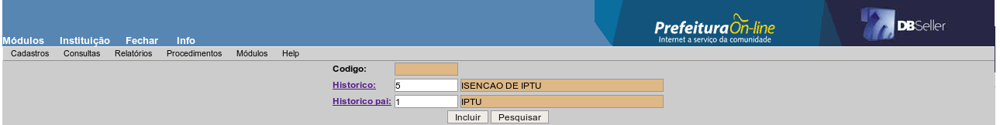
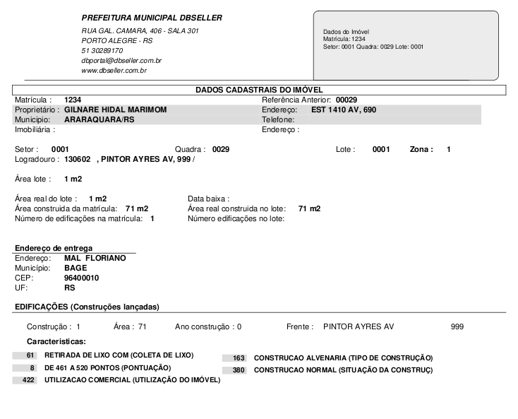

Figura 9
Histórico de Cálculo do IPTU 19
Configuração de Histórico de Cálculo 20
Contribuintes por Logradouro 43
Logradouros sem CEP Próprio 48
Proprietário / Setor / Quadra 49
Característica / Setor / Quadra 51
Cálculo do IPTU por Matrícula 63
Comparativo do Cálculo do IPTU entre anos 66
IPTU - Lançamento e Pagamentos 71
Valores Calculados Por Histórico 72
Descontos Concedidos (cota única) 74
Débitos Por Setor / Quadra / Lote 78
Comparativo Entre Face e Lote 85
Exclusão de Cálculo Parcial 95
Setor Fiscal / Face de Quadra 117
Logradouro / Característica 118
Gerar TXTs Multi Finalitário 120
Excessões na Geração dos Carnês 120
Inclusão Geral de Parcela Única 127
CADASTRO IMOBILIÁRIO
O módulo Cadastro Imobiliário tem como finalidade organizar um conjunto de informações como - identificação, localização e características - dos imóveis urbanos do município.
Através dos elementos desse cadastro, efetua-se o lançamento de imposto (IPTU) e taxas vinculadas a ele.
Atenção: Não poderá incluir mais de um condomínio com o mesmo CGM.
Apenas utilizado para registrar os prédios de um determinado condomínio.
Na maioria dos municípios, o cadastro imobiliário é dividido em setores, tanto para identificar a localização dos imóveis, quanto para identificar o setor fiscal (planta genérica de valores) que os imóveis estão enquadrados.
Esse cadastro corresponde a divisão física da cidade em setores. Na inclusão de lotes, será solicitado o setor onde o imóvel está localizado.
Para cadastrar um setor preencha os seguintes campos:
Setor: Informe o código numérico do setor que está cadastrando.
Descrição: Informe uma descrição (nome) para o setor.
Alíquota Predial / Alíquota Territorial: Caso a alíquota do IPTU para os imóveis seja definida de acordo com o setor da cidade, onde estão localizados os lotes, informe a alíquota para as matrículas prediais e para as territoriais.
Figura
1
Corresponde as divisões da cidade sob a ótica da planta genérica de valores do município.
Em alguns casos, o setor fiscal e a zona fiscal podem ter a mesma finalidade.
Para cadastrar um setor fiscal, preencha os seguintes campos:
ABA SETOR FISCAL
Código do Setor Fiscal: Esse campo corresponde ao código do cadastro do setor fiscal, e será preenchido automaticamente.
Descrição do Setor Fiscal: Informe uma descrição para o setor que está sendo cadastrado.
Figura
2
ABA VALORES
Ano: Informe o ano para o valor do metro quadrado que será informado no próximo campo.
Valor m2 Terreno: Informe o valor do metro quadrado do terreno definido pela planta genérica de valores para o ano informado no campo anterior.
Figura
3
Setor de localização é a divisão geográfica da cidade. Dessa forma pode ser gerado um cadastro com essas divisões, para no cadastro de imóveis, identificar onde o lote está localizado.
Código: Informe o código numérico do setor que está sendo cadastrado.
Descrição: Informe uma descrição para o setor.
Figura
4
O cadastro de zona fiscal, tem a finalidade bem parecida com o cadastro de setor fiscal, pois existes municípios que dividem a cidade para fins de valorização dos imóveis por zona fiscal e outras por setor fiscal, dependendo do que está definido na planta genérica de valores e na lei de regulamentação do IPTU.
Para cadastrar uma zona fiscal, preencha os seguintes campos:
Código: Informe o código numérico do cadastro de zona fiscal que está sendo efetuado.
Descrição: Informe uma descrição para a zona fiscal.
Figura
5
Nessa opção, é possível formar uma base de dados contendo todos os bairros da zona urbana e da zona rural do município.
Esse cadastro será utilizado posteriormente para constituir o cadastro dos imóveis, o cadastro das empresas e o cadastro de contribuintes.
Para efetuar o cadastro de um bairro, efetue o preenchimento dos seguintes campos:
Código do Bairro: Esse campo corresponde ao código que o bairro que está sendo cadastrado receberá e será preenchido automaticamente.
Bairro: Preencha nesse campo o nome do bairro, podendo ter uma denominação de até 40 dígitos.
Código Anterior: Nesse campo pode ser informado o código do bairro no cadastro anterior de bairros. O preenchimento desse campo não é obrigatório.
Rural: Selecione nesse campo a localização do bairro, ou seja, identifique se está localizado na zona urbana ou rural do município.
Após o preenchimento dos campos, clique no botão “incluir” para concluir o cadastro.
Figura
6
Para alterar um cadastro de bairro, selecione o registro desejado na lista conforme demonstrado na figura 7, sendo possível modificar qualquer informação lançada na inclusão do registro. Após efetuar as alterações, clique no botão “alterar”.
Figura
7
Para efetuar a exclusão de um bairro do cadastro, selecione o registro desejado e clique no botão [excluir].
Atenção: Não será permitida a exclusão de um cadastro de bairro que tenha vínculos com o cadastro de contribuintes (CGM), cadastro de lotes, cadastro de empresas ou autônomos ou com o cadastro de alvará sanitário.
Nessa opção é possível formar uma base de dados contendo todos os loteamentos e condomínios do município.
Esse cadastro poderá ser utilizado posteriormente para constituir o cadastro dos imóveis.
Quando for efetuado o cadastramento de um imóvel, pode ser identificado a qual loteamento ou condomínio ele pertence, porém essa informação não é obrigatória, dessa forma esse cadastro é opcional.
Para efetuar o cadastro de um loteamento, devem ser preenchidos os seguintes campos:
Cód. Loteamento: Esse campo corresponde ao código do loteamento e será preenchido automaticamente.
Descrição: Nesse campo informe a descrição que identifique o nome do loteamento.
Área Construída: Nesse campo deve ser informada a área do condomínio que foi destinada aos lotes.
Área Pública: Nesse campo deve ser informada a área pública do condomínio, ou seja, a área de uso comum.
Área Total: Nesse campo deve ser informada a área total do condomínio, ou seja, a soma da área construída mais a área pública.
Figura
8
Para efetuar a alteração em um cadastro de condomínio, selecione o registro desejado na lista conforme figura 9 e proceda as alterações necessárias.
Figura
9
Para efetuar a exclusão de um cadastro de condomínio, selecione o registro desejado na lista conforme figura 4 e clique no botão [excluir].
Atenção: Não será permitida a exclusão de um cadastro de um loteamento que esteja vinculado a um cadastro de lote.
Essa rotina consiste em formar uma base com as comarcas dos Cartórios de Registro de Imóveis que existem no município.
Código: Esse campo corresponde ao código do cadastro que está sendo efetuado e será preenchido automaticamente.
Descrição: Informe a descrição que identifique esse cadastro (nome da comarca).
Para alterar um cadastro, selecione o registro desejado na lista e faça as alterações necessárias.
Para excluir um cadastro, selecione o registro desejado na lista e clique no botão [excluir].
Atenção: Não será permitida a exclusão de um cadastro de registro de imóveis que esteja vinculado a um cadastro de lote.
Nesse rotina é efetuado o cadastro dos tipos de confrontações que um lote pode fazer, além da confrontação com outro lote e da confrontação com um logradouro.
Ex.: divisa com arroio, divisa com rio, divisa com área rural.
Para efetuar um cadastro de testada interna, preencha os seguintes campos:
Código: Esse campo corresponde ao código do cadastro que está sendo efetuado e será preenchido automaticamente.
Descrição: Nesse campo, preencha a identificação da testada interna.
Para alterar um cadastro de tipo de testada interna, selecione o registro desejado na lista conforme figura 10 e proceda a alteração necessária.
Para excluir um cadastro de tipo de testada interna, selecione o registro desejado na lista conforme figura 10 e clique no botão [excluir].
Atenção: Não será permitido a exclusão de um tipo de testada interna que tenha vínculo no cadastro de um lote.
Figura
10
Nessa rotina é efetuado o cadastro dos tipos de orientação dos imóveis.
Ex.: norte, sul, leste, oeste, noroeste, sudoeste, etc.
Para efetuar um cadastro de orientação, preencha os seguintes campos:
Código: Esse campo corresponde ao código do cadastro que está sendo efetuado e será preenchido automaticamente.
Descrição: Nesse campo preencha o nome da orientação.
Figura
11
Para alterar um cadastro de orientação, selecione o registro desejado na lista conforme figura 6 e proceda a alteração necessária.
Para excluir um cadastro de orientação, selecione o registro desejado na lista conforme figura 6 e clique no botão [excluir].
Atenção: Não será permitida a exclusão de um cadastro de orientação que está vinculado a um cadastro de imóvel.
Figura
12
Nessa rotina é efetuado o cadastro dos tipos de isenção utilizados no cadastro de isenções dos imóveis em relação aos tributos (IPTU e taxas).
Para efetuar um cadastro, preencha os seguintes campos:
Código: Esse campo corresponde ao código do cadastro que está sendo efetuado e será preenchido automaticamente.
Descrição: Nesse campo preencha a identificação do tipo de isenção.
Ex.: Isenção aposentados, isenção conforme Lei 2233/2002.
Tipo de Isenção: Nesse campo deve ser selecionado se esse cadastro se trata de isenção ou de imunidade.
Isenta Taxas: Selecione essa opção se esse tipo isentará ou não as taxas cobradas juntamente com o IPTU, no momento em que for cadastrada uma isenção para um imóvel com esse tipo.
Ex.: Se for cadastrado um tipo de isenção e nessa opção for selecionado “SIM”, no momento que for lançar uma isenção para um imóvel com esse tipo, permitirá que seja lançado também isenção para as taxas.
Observação Certidão: Nesse campo pode ser digitada qualquer observação sobre esse cadastro. O conteúdo desse campo será impresso na Certidão de Isenção.
Figura
13
Para alterar um cadastro de Tipo de Isenção, selecione o registro desejado na lista conforme figura 8 e proceda com as alterações necessárias.
Para excluir um cadastro de tipo de isenção, selecione o registro desejado na lista conforme figura 14 e clique no botão [excluir].
Atenção: Não será permitida a exclusão de um tipo de isenção que já esteja vinculado a um cadastro de isenção de uma determinada matrícula.
Figura
14
Esse cadastro consiste basicamente em selecionar um CGM do cadastro de contribuintes, e informar ao sistema que este CGM é uma imobiliária.
Esse cadastro será utilizado posteriormente para organizar os imóveis por imobiliária.
Nessa rotina não tem opção para alteração, pois todos os dados cadastrais relativos a imobiliária, estão no cadastro do CGM.
Para excluir um cadastro de imobiliária, selecione o registro desejado na lista conforme figura 15 e clique no botão [excluir].
Figura
15
Atenção: Não será permitida a exclusão de uma imobiliária que possui imóveis ligados a ela.
Nessa rotina é criado o cadastro dos grandes grupos de características, que serão posteriormente utilizadas para dar o detalhamento do tipo de terreno, construção, face de quadra, ITBI e obras/projetos.
Para cadastrar um grupo de característica, preencha os seguintes campos:
Código: Informe o código do cadastro que está sendo efetuado.
Descrição: Informe e descrição do grupo de característica.
Ex.:
Construção - tipo de construção, espécie de construção, situação da construção.
Lote - Pedologia, Topografia, Passeio, Cerca/Muro.
Face - Iluminação, Coleta de Lixo, Pavimentação, Meio Fio, Esgoto.
ITBI: Espécie da Construção, Tipo de Construção.
Obras/Projetos: Tipo de Lançamento, Ocupação.
Tipo: Selecione nessa opção em qual cadastro será utilizado esse grupo de características que está sendo cadastrado, de acordo com os tipos especificados acima.
Ex.: se for cadastrado um grupo com o tipo “construção”, ele aparecerá para qualificar uma construção no cadastro de construções. Se for do tipo “lote”, aparecerá no cadastro de lotes para qualificar o lote. Se for do tipo “face”, aparecerá no cadastro de faces para qualificar a face de quadra. Se for do tipo “ITBI”, aparecerá no cadastro de construções das ITBIs. Se for do tipo “Obras/Projetos”, aparecerá no cadastro de construções das obras do módulo Projetos.
Figura
16
Para alterar um cadastro de grupo de características, selecione o registro desejado na lista conforme figura 17 e proceda as alterações necessárias.
Para excluir um cadastro de grupo de características, selecione o registro desejado na lista conforme figura 17 e clique no botão [excluir].
Atenção: Não será permitida a exclusão de um grupo de características que esteja vinculado a um cadastro de característica.
Figura
17
Nessa opção, é formada uma base de dados com as informações necessárias para caracterizar os imóveis (faces de quadra, lotes, construções, ITBI ou obras/projetos).
Para efetuar o cadastro de características, preenchas os seguintes campos:
Cód. Característica: Esse campo corresponde ao código da característica que está sendo cadastrada e será preenchido automaticamente.
Descrição: Informe uma descrição que identifique a característica que está sendo cadastrada.
Ex.: alvenaria, madeira, sem iluminação pública, iluminação mercúrio, pavimentação asfáltica, calçamento com pedra irregular.
Grupo: Informe nesse campo ou clique no link para pesquisar o grupo que essa característica pertence.
Ex.: caso esteja cadastrando uma característica chamada “alvenaria”, deve selecionar o grupo “tipo de construção”.
Pontos: caso o sistema de valorização dos imóveis seja por pontuação das características, informe nesse campo o valor da pontuação dessa característica.
Característica principal: Caso seja selecionado nesse campo para essa característica como principal = SIM, esse cadastro sempre será carregado carregado default no momento da inclusão de um imóvel.
Figura 18
Para alterar um cadastro de característica, selecione o registro desejado conforme figura 19 e proceda as alterações necessárias.
Para efetuar a exclusão de uma característica, selecione o registro desejado na lista e clique no botão [excluir].
Atenção: Não será permitida a exclusão de uma característica que esteja vinculada a um lote ou construção por exemplo.
Figura
19
Nessa opção é efetuado o cadastro tanto dos históricos de cálculo, como seus respectivos históricos para isenção, que serão utilizados no momento que se efetua o cálculo do IPTU.
Ex.: IPTU, Taxa de Serviços Urbanos, Isenção de IPTU, Isenção da Taxa de Serviços Urbanos.
Para efetuar um cadastro, preencha os seguintes campos:
Código: Informe o código numérico para o cadastro que está sendo efetuado.
Descrição: Digite uma descrição que identifique esse histórico de cálculo.
Ex.: IPTU, Taxa de Serviços Urbanos, Isenção de IPTU, Isenção da Taxa de Serviços Urbanos.
Figura
20
Para alterar um registro do cadastro de histórico de cálculo, selecione o registro desejado na lista conforme figura 21 e proceda com a alteração necessária.
Para excluir um registro do cadastro de histórico de cálculo, selecione o registro desejado conforme figura 21 e clique no botão [excluir].
Atenção: Não será permitida a exclusão de um histórico de cálculo que tenha sido vinculado a um cálculo de IPTU. Uma vez inserido um registro nesse cadastro e processado algum cálculo, não será mais possível sua exclusão.
Figura
21
Nessa opção, é efetuada vinculação entre o histórico de cálculo do tributo e seu respectivo histórico para isenção.
Código: Corresponde ao código do registro que está sendo inserido e será preenchido automaticamente.
Histórico: Informe nesse campo o código do histórico relativo a isenção.
Histórico pai: Informe nesse campo o código do histórico relativo ao débito.
Figura 22
Para alterar uma vinculação de um histórico de cálculo com seu respectivo histórico de isenção, selecione o registro desejado na lista e proceda com a alteração.
Para excluir uma vinculação de histórico de cálculo com seu respectivo histórico de isenção, selecione e registro desejado na lista e clique no botão [excluir].
Atenção: A alteração da vinculação de um histórico de cálculo com seu respectivo histórico de isenção, afetará também o demonstrativo de cálculo dos anos anteriores, portando não é aconselhada essa troca de vinculação.
A exclusão de uma vinculação de histórico de cálculo com seu respectivo histórico de isenção, implicará em não apresentar no demonstrativo de cálculo os valores relativos ao débito gerado a seu respectivo valor de isenção, quando houver.
Nessa opção é efetuada a configuração das taxas por exercício que são geradas juntamente com o IPTU, quando o cálculo é processado.
ABA DADOS DA TAXA
Código da Taxa: Esse campo corresponde ao código do registro que está sendo inserido e será preenchido automaticamente.
Descrição: Digite uma descrição que identifique o cadastro dessa taxa.
Ex.: Taxa de Serviços Urbanos.
Figura 23
ABA CONFIGURAÇÃO DA TAXA
Receita: Informe a receita orçamentária correspondente a taxa que está sendo cadastrada. Caso não saiba o código da receita, clique no link para pesquisar pelo nome.
Históricos: Informe a do histórico de cálculo correspondente a taxa que está sendo cadastrada. Caso não saiba o código, clique no link para pesquisar pelo nome.
Código Função: Clique no link para selecionar a função de cálculo que gera o IPTU para o ano desse cadastro.
Histórico para Isenção: Informa o código correspondente ao histórico de isenção da taxa que está sendo cadastrada. Caso não saiba o código, clique no link para pesquisar pelo nome.
Valor: Informe o valor base para calculo dessa taxa.
Alíquota: Informe a alíquota (%) que será aplicada sobre o valor base para gerar o valor da taxa.
Exercício: Esse campo corresponde ao ano do cálculo que será aplicado esse cadastro. Esse será preenchido automaticamente com o ano atual.
Figura
24
Para alterar um cadastro de taxa, selecione o registro desejado na lista e proceda com as alterações necessárias.
As alterações efetuadas nesse cadastro só terão efeito se for efetuado novamente o cálculo do IPTU.
Para excluir um cadastro de taxa, selecione o registro desejado na lista e clique no botão [excluir].
Atenção: Não será permitida a exclusão de registros que estejam vinculados ao cálculo de IPTU de algum imóvel.
Nessa opção, é criada uma base de dados com os logradouros do município que será utilizado posteriormente para o cadastro de imóveis, cadastro de empresas e cadastro de contribuintes.
Nessa opção devem ser lançados todas as ruas, avenidas e outros tipos de logradouros da zona rural e urbana do município.
ABA CADASTRO DE RUAS
Cód Logradouro: Esse campo corresponde ao código do logradouro que está sendo cadastrado e será preenchido automaticamente com a efetivação do cadastro.
Logradouro: Informe nesse campo o nome do logradouro que está sendo cadastrado.
Tipo do Logradouro: Selecione o tipo de logradouro, ou seja, pode ser rua, avenida, travessa, etc.
CEP: Caso o município possua CEP por logradouro, informe o código do CEP desse logradouro junto ao cadastro de CEPs dos Correios. Caso o município não possua CEP por logradouro, esse campo não deve ser preenchido.
Lei: Informe o número e ano da Lei que criou o logradouro.
Data Lei: Informe a data da lei que criou o logradouro.
ABA BAIRRO
Nessa aba é selecionado o bairro onde esse logradouro está localizado. Caso o logradouro passe por mais de um bairro, todos devem ser informados nessa aba.
Bairro: Informe o código do bairro onde o logradouro está localizado, caso não saiba, clique no link para pesquisar pelo nome. Após a seleção, clique no botão [incluir]. Caso o logradouro passe por mais de um bairro, repita a operação selecionando todos os bairros.
Para alterar um cadastro de logradouro, selecione o registro desejado na lista conforme figura 20 e proceda com as alterações necessárias.
Para excluir um cadastro de logradouro, selecione o registro desejado na lista conforme figura 26 e clique no botão [excluir].
Atenção: Não será permitida a exclusão de um logradouro que esteja vinculado a um cadastro de imóvel, empresa ou contribuinte.
Figura
26
Face de quadra é cada um dos lados de uma quadra ou quarteirão que fica voltado para um logradouro, ou seja, é o trecho de cada lado do logradouro compreendido entre duas esquinas ou entre uma esquina e o início ou o final do logradouro.
Esse cadastro compreende em identificar esses trechos compreendendo o logradouro, a quadra e as características de infra estrutura existente nela, além dos serviços públicos atendidos pela mesma.
Para efetuar o cadastro de uma face de quadra, preencha os seguintes campos:
Cód Face: Esse campo corresponde ao código da face que está sendo cadastrada e será preenchido automaticamente.
Setor: Informe o código do setor da cidade onde está localizada a face que está sendo cadastrada. Caso não saiba o código, clique no link para pesquisar pelo nome.
Quadra: Informe o número da quadra que compõe a face de quadra.
Logradouro: Informe o código ou clique no link para pesquisar o logradouro que compõe a face de quadra.
Lado: Indique nessa opção em que lado do logradouro está localizada essa face de quadra que está sendo cadastrada. O lado deve ser identificado considerando o sentido a partir do ponto de onde o logradouro inicia para onde ele termina.
Extensão: Nesse campo pode ser informada a extensão em metros lineares da face, ou seja, é a distancia entre uma esquina e outra ou entre uma esquina e o início ou o fim do logradouro.
Profundidade Quadra: Nesse campo pode ser informada a metragem de profundidade da quadra, ou seja, é a medida entre a testada do lote para a face até a testada do lote que se encontra na face oposta a essa.
Outros Dados: Nesse campo pode ser digitada qualquer observação que se queira fazer a respeito desse cadastro.
Característica Face: Clique no link para selecionar as características que compõe a face da quadra que está sendo cadastrada conforme figura 27. Após selecionar as características da face, clique no botão enviar.
Figura
27
Figura
28
ABA VALOR
Nessa aba são lançadas informações relativas aos valores do metro quadrado do terreno e da construção dos imóveis que estão localizados nessa face de quadra.
As informações relativas aos valores só devem ser preenchidas se o critério adotado na planta genérica de valores do município for a valoração por face de quadra, caso contrário deixe em branco essas informações.
Exercício: Informe o ano correspondente aos valores do metro quadrado que está sendo informado.
Valor m2 terreno: Informe nesse campo o valor do metro quadrado do terreno para o ano que está sendo lançado.
Valor m2 construção: Informe nesse campo o valor do metro quadrado do terreno para o ano que está sendo lançado.
Figura
29
Nessa rotina é efetuado o cadastro das matrículas de imóveis que pertencem a uma massa falida, bem como seu responsável, o síndico.
Cód Lançamento: Esse campo corresponde ao código do cadastro que está sendo efetuado e será preenchido automaticamente.
Data Declaração: Informe nesse campo a data que foi decretada a falência da empresa proprietária dos imóveis que estão sendo informados nesse cadastro.
CGM Responsável: Informe o número do CGM do responsável pela massa falida (síndico) ou clique no link para pesquisar pelo nome.
Observação: Nesse campo pode ser digitado qualquer observação que queira fazer sobre o cadastro.
Matrícula do Imóvel: Informe o código das matrículas que pertencem à massa falida. Para cada matrícula informada, clique no botão [adicionar].
Figura
30
Para excluir alguma matrícula que tenha adicionado, selecione a matrícula e o botão [adicionar] será convertido em [excluir]. Clique sobre ele e essa matrícula será excluída desse cadastro.
Para alterar um cadastro de massa falida, selecione o registro desejado na lista conforme figura 31 e proceda com as alterações necessárias.
Para excluir um cadastro de massa falida, selecione o registro desejado na lista conforme figura 31 e clique no botão [excluir].
Figura
31
Nesta rotina podemos cadastrar novos tipos de averbação para utilizar na rotina Procedimentos > Averbação > Inclusão.
Código: Gerado automaticamente pelo sistema após inclusão do registro.
Descrição: Escreva o nome para o tipo de averbação que será incluído, deve ser até no máximo 20 caracteres;
Regra: Selecione o tipo de regra será seguido por esta averbação. Ex: Quando selecionado “Proprietário” ao incluir uma averbação com este tipo o imóvel será transferido para o proprietário, se for selecionado “Promitente” a averbação deste imóvel irá ficar em nome do promitente.
Data limite: Esta data, quando informada, será o limite de uso deste tipo. Ex: Ao incluir este registro com data 31/12/2009, em 02/01/2010 este tipo não estará mais disponível para utilizar na inclusão de averbação.
Grupo: Selecione em qual grupo será vinculado este tipo de averbação. Pode ser 1-Escritura, 2-Registro de Imóveis, 3-Outros, 4-Formal de Partilha, 5-Decisão Judicial, 6-ITBI.
Figura
31 a
Para alterar um cadastro de tipo de averbação, selecione o registro desejado na lista conforme Figura 31b e proceda com as alterações necessárias.
Para excluir um cadastro de tipo de averbação, selecione o registro desejado na lista conforme Figura 31b e clique no botão [excluir].
Nessa opção é permitido efetuar a consulta do cadastro de uma matrícula, podendo ser efetuada informando um dos campos abaixo:
Matrícula do Imóvel: Informando diretamente o número da matrícula que deseja realizar a consulta.
Nome / Razão Social: Informe o nome do proprietário do imóvel que deseja realizar a consulta. Nessa opção será apresentada uma relação com todas as matrículas do proprietário indicado.
Imobiliárias: Informe o nome da imobiliária que deseja consultar os imóveis. Nessa opção será apresentada uma lista com todas as matrículas que estão vinculadas a imobiliária indicada.
Setor / Quadra / Lote: Informe o setor, a quadra e o lote do imóvel que deseja consultar. Dessa forma será apresentada uma lista com todas as matrículas vinculadas a esse lote. Caso haja somente uma matrícula vinculada ao lote, o sistema abrirá a consulta do imóvel diretamente.
Nessa opção também pode ser informado apenas um dos campos, ou seja, somente setor, somente quadra ou somente lote. Dessa forma será apresentada uma lista de todos os imóveis que possuem em seu cadastro a informação utilizada para pesquisa.
Cód Logradouro: Informe o código do logradouro para pesquisar, e dessa forma será apresentada uma lista com todas as matrículas dos imóveis que estão localizados nesse logradouro.
Logradouro: Esse pesquisa é idêntica a pesquisa realizada pelo código do logradouro, porém nessa caso informa-se o nome do logradouro.
Cód do Bairro: Informe o código do bairro e será apresentada uma lista com todas as matrículas dos imóveis que estão localizados e em seu cadastro estão vinculados a esse bairro.
Bairro: Essa pesquisa é idêntica a pesquisa realizada pelo código do bairro, porém nesse caso informa-se o nome do bairro.
A pesquisa realizada pelos campos a seguir só será possível se essas informações estiverem contidas no cadastro dos imóveis.
Matrícula do Registro de Imóveis: Informe o código da matrícula junto ao registro de imóveis para pesquisa.
Registro de Imóveis: Informe a comarca do Registro de Imóveis e será apresentada uma lista com todos os imóveis registrados nessa cartório.
Quadra do Registro de Imóveis: informe a quadra do registro de imóveis e será apresentada uma lista com os imóveis cujo cadastro esteja vinculado a ela.
Lote do Registro de Imóveis: Informe o lote do registro de imóveis e será apresentada uma lista com os imóveis cujo cadastro esteja vinculado a ele.
Esses dois últimos campos podem ser utilizados de forma conjugada, dessa forma a lista apresentada dos imóveis será mais restrita, trazendo somente os imóveis da quadra e lote.
Após informar a chave de pesquisa, clique no botão [Pesquisar].
Na demonstração a seguir, será efetuada a consulta pelo número da matrícula conforme figura 32.
Figura
32
Ao acessar a consulta do imóvel desejado, será apresentada a tela conforme figura 33, contendo todas as informações cadastrais, de transferência (averbação) e referentes aos cálculos de IPTU efetuados ao longo dos anos.
Na consulta, as informações da matrícula estão organizadas de forma a facilitar a visualização, dessa forma:
Figura 33
Na tela demonstrada na figura 33, está demonstrada a forma como as informações do cadastro do imóvel serão apresentadas. Na parte superior serão apresentadas as informações relativas aos dados cadastrais como: proprietário, promitente (se for o caso), referência anterior, imobiliária, zona e setor fiscal, setor, quadra, lote, área do lote, área construída sobre o lote, logradouro onde o lote está localizado, loteamento e bairro.
Na parte inferior da tela ficam disponíveis os links para outras informações do imóvel conforme segue:
Características do imóvel – apresenta as características relativas ao lote.
Isenções – apresenta, quando houver, as isenções lançadas para o imóvel.
Construções ativas – apresenta as construções existentes sobre o imóvel que não estão demolidas. Caso uma construção tenha uma demolição parcial lançada, as informações serão apresentadas também nesse link.
Construções demolidas – apresenta as construções que existiram sobre esse imóvel e que foram totalmente demolidas.
Construções escrituradas – apresenta as construções existentes sobre o imóvel que foram lançadas na aba construções escrituradas da rotina de manutenção de matrículas.
Testada principal/secundária – apresenta a testada principal do imóvel e a secundária, ou seja, são os logradouros para onde o imóvel faz divisa.
Testadas internas – apresenta as confrontações do imóvel que não são com logradouros.
Demonstrativo do cálculo – nesse link, pode ser selecionado um ano e após podemos visualizar todas as variáveis consideradas durante o cálculo do IPTU e das taxas naquele ano.
Endereço de entrega – apresenta o endereço de entrega que foi registrado para essa matrícula.
Outros proprietário – apresenta, quando houver, o nome dos outros proprietários dessa matrícula.
Promitentes compradores – apresenta, quando houver, o nome dos promitentes (possuidor) dessa matrícula.
Averbação – apresenta todos os registros de averbação lançados para essa matrícula, podendo dessa forma visualizar todos os antigos proprietários desse imóvel.
Cálculo – nesse link são apresentados os cálculos do IPTU e das taxas da matrícula ano a ano.
Outros dados – apresenta as observações lançadas no campo observações na aba matrícula da rotina de manutenção de matrículas.
Imprime BIC completa – nesse link é possível imprimir um Boletim com Informações Cadastrais da matrícula. Esse boletim contém todas as informações cadastrais do imóvel e os dados relativos ao cálculo do IPTU do ano atual conforme figura 34 .
Imprime BIC resumida – como na BIC completa, essa opção imprime um boletim com os dados cadastrais do imóvel, porém as informações relativas ao cálculo do IPTU não são impressas, conforme figura 34 A.
Imprimir BIC – Modelo Novo - Nesta rotina poderá emitir a BIC selecionando os dados que deseja lista: Por ex: Poderá selecionar gerar a BIC sem as insformações das Características do lote. No Modelo completo Listará:
* Dados do imóvel, Características do lote, Características da face, Características das construções, Testadas do lote, Testadas internas, Proprietários, Outros proprietários, Promitentes, Outros promitentes, Imobiliária, Endereço de entrega, Edificações, Dados do Registro de Imóveis, Isenções, Averbações, Cálculos (quando selecionado mostrará todos os cálculos);
Basta selecionar as informações que deseja listar, conforme figura 33A, e clicar no botão Imprimir.
No modelo Resumido listará as seguintes informações:
* Dados do imóvel, Características do lote, Características da face, Características das construções, Testadas do lote, Proprietários, Outros proprietários, Promitentes, Outros promitentes, Imobiliária, Endereço de entrega, Edificações.
Basta selecionar as informações que deseja listar, conforme figura 33 B, e clicar no botão Imprimir.
Figura 33 A – Modelo de Tela de emissão da BIC – Modelo Novo do Tipo Completa.
Figura 33 B – Modelo de Tela de emissão da BIC – Modelo Novo do Tipo Resumida.
Figura
34 – Modelo da BIC Antiga Completa

Figura
34 A – Modelo da BIC Antiga Resumida
Figura
34 B – Modelo da BIC – Modelo Novo do Tipo Completa.
Figura
34 C – Modelo da BIC – Modelo Novo do Tipo Resumida.
Neste consulta é feita a consulta de ITBI, a descrição dessa consulta está no manual do Módulo ITBI
Essa opção imprime uma relação com os bairros do município. Esse relatório pode ser gerado na ordem numérica pelo código do bairro ou alfabética pelo nome do Bairro. Selecione a ordem que deseja e clique no botão [Exibir Relatório].
Figura
36
Essa opção imprime uma relação com os registros lançados no cadastro de características. Esse relatório pode ser gerado na ordem numérica pelo código da característica, alfabética pelo nome da característica ou pela ordem do grupo que a característica pertence. Selecione a ordem que deseja e clique no botão [Exibir Relatório].
Figura
37
Nessa opção é possível emitir um relatório com as matrículas que possuam construções, conforme as opções de filtros selecionados:
ABA COM AS CARACTERÍSTICAS
Que contenham estas características de construção: Nessa opção, marque as características de construção que deseja considerar nos imóveis para para gerar o relatório.
Data de Inclusão: Caso desejar considerar apenas as construções cadastradas em um determinado período, informe o intervalo de data que deseja considerar. Essa data corresponde a data de inclusão da construção no cadastro.
Ano da Construção: Caso desejar considerar apenas as construções cujo ano da construção seja de um determinado intervalo, informe esse intervalo de anos.
Código: Selecione nesse campo o grupo de características que deseja considerar para as construções. Essa opção de filtro pode ser desconsiderada caso queira considerar todos os grupos de características.
Área Construída Entre: Informe o intervalo de área da construção que deseja considerar no relatório. Case desejar considerar as construções com qualquer área, deixe esses valores em branco.
Pontuação entre: Caso o sistema de avaliação das construções seja por pontuação, informe o intervalo de pontos que deseja considerar para as construções. Caso desejar as construções com qualquer pontuação, deixe esses valores em branco.
Ordem: Selecione a forma de ordenação que deseja que o relatório seja gerado, podendo ser por: matrícula, nome, ano da construção, área, data de lançamento (data de cadastro da construção), logradouro, setor/quadra/lote.
Modo: Selecione o modo que deseja ordenar o relatório de acordo com o filtro selecionado, podendo ser: ascendente ou descendente.
Tipo: Selecione nessa opção o tipo de relatório que deseja, ou seja, completo ou resumido. No relatório resumido será impresso apenas os totais de matrículas encontradas, a quantidade e a soma da área de todas as construções conforme demonstrado na figura 39. O relatório completo é emitido conforme demonstrado na figura 40.
Habite-se: Nessa opção, pode ser selecionado se deseja considerar as construções com habite-se, sem habite-se ou todas as construções.
Demolições: Nessa opção pode ser selecionado se deseja considerar as construções demolidas, não demolidas ou todas as construções.
Origem: Nessa opção pode ser selecionado se deseja considerar as construções cujo cadastro foi vinculado a uma nova construção ou a uma ampliação de uma construção já existente, ou então considerar todas as construções.
ABA SEM AS CARACTERÍSTICAS
Nessa aba é apresentada a relação com todas as características que estão vinculadas aos grupos de características cujo tipo é de construção.
Selecione quais características deseja desconsiderar para a emissão do relatório. As matrículas de imóveis que possuem construção com as características selecionadas nessa opção, não serão consideradas no relatório no relatório.
ABA SETOR
Selecione nessa aba quais setores deseja considerar. Caso não seja selecionado nenhum setor, o sistema considera todos os setores.
ABA QUADRA
Nessa aba só serão apresentadas as quadras dos setores selecionados na aba setor. Se não foi selecionado nenhum setor, serão consideradas todas as quadras do município.
ABA COM AS RUAS
Nessa aba pode ser informado um ou mais logradouros que desejamos considerar como filtro na emissão do relatório, e nesse caso, só serão consideradas as matrículas cujo endereço do imóvel estiver vinculado aos logradouros informados nessa aba.
Para selecionar os logradouro, informe o código e clique no botão [Lançar]. Caso não saiba o código do logradouro, clique no link para pesquisar pelo nome.
ABA SEM AS RUAS
Nessa aba pode ser informado um ou mais logradouros que deseja desconsiderar na emissão do relatório e nesse caso, serão consideradas todas as matrículas cujo endereço do imóvel não estiver vinculado aos logradouros informados nessa aba. Para selecionar os logradouro, informe o código e clique no botão [Lançar]. Caso não saiba o código do logradouro, clique no link para pesquisar pelo nome.
Figura
39 – modelo resumido
Figura 40 – modelo completo
Nessa opção é possível emitir um relatório com os contribuintes que possuem imóveis localizados no logradouro selecionado. Preencha o código do logradouro ou clique no link para pesquisar pelo nome, após clique no botão [Lançar].
Pode ser informado mais de um logradouro como filtro, sendo que no relatório serão impressos todos os contribuintes de um logradouro, depois todos os contribuintes de outro e assim sucessivamente, para todos os registros inseridos no filtro.
Caso não seja selecionado nenhum logradouro, serão considerados todos.
No campo “opções”, pode ser invertida a opção de filtro selecionada, ou seja, caso seja selecionado um logradouro e a opção selecionada seja “com as ruas selecionadas”, serão impressos todos os contribuintes que possuem imóvel nesse logradouro. Caso selecione a opção “sem as ruas selecionadas”, serão impressos todos os contribuintes que possuem imóveis em todos os logradouros do município exceto naqueles que estão localizados no logradouros inseridos nos filtros.
Figura
41
Nessa opção, é possível gerar um relatório com as construções que foram demolidas parcialmente ou totalmente, conforme as opções de filtros a seguir:
Período: Informe o intervalo de datas que deseja considerar para gerar o relatório. Essa data corresponde a data de demolição da construção.
Tipo: Informe o tipo de demolição que deseja considerar:
parcial – construções demolidas parcialmente;
total – construções demolidas totalmente;
total e parcial – construções demolidas parcialmente e construções demolidas totalmente.
Figura
41
Nessa opção é possível emitir um relatório com as faces de quadra conforme as opções de filtros selecionados:
ABA COM AS CARACTERÍSTICAS
Que contenham estas características de face: Nessa opção, marque as características que deseja considerar nas faces de quadra para gerar o relatório.
Código: Selecione nesse campo o grupo de características que deseja considerar para as faces de quadra. Essa opção de filtro pode ser desconsiderada caso queira considerar todos os grupos de características.
Pontuação entre: Caso tenha sido informado pontuação no cadastro de características, informe nessa opção o intervalo de pontos que deseja filtrar, considerando a soma da pontuação da face de quadra, conforme suas características. Caso desejar emitir o relatório das faces independente da pontuação, deixe esses valores em branco.
Ordem: Selecione a forma de ordenação que deseja que o relatório seja gerado, podendo ser por rua (logradouro), setor ou quadra.
Modo: Selecione o modo que deseja ordenar o relatório de acordo com o filtro selecionado, podendo ser ascendente ou descendente.
Tipo: Selecione nessa opção o tipo de relatório que deseja: completo ou resumido.
ABA SEM AS CARACTERÍSTICAS
Nessa aba é apresentada a relação com todas as características que estão vinculadas aos grupos de características cujo tipo é de face de quadra. Selecione quais características deseja desconsiderar para a emissão do relatório. As faces de quadra com as características selecionadas nessa opção, não serão consideradas no relatório.
ABA SETOR
Selecione nessa aba quais setores deseja considerar. Caso não seja selecionado nenhum setor, o sistema considera todos os setores.
ABA QUADRA
Nessa aba, só serão apresentadas as quadras dos setores selecionados na aba setor. Se nenhum setor for selecionado, serão consideradas todas as quadras do município.
ABA RUAS
Nessa aba pode ser informado um ou mais logradouros que deseja considerar como filtro na emissão do relatório e nesse caso, só serão consideradas as faces de quadras localizadas nesses logradouros. Para selecionar os logradouro, informe o código e clique no botão [Lançar]. Caso não saiba o código do logradouro, clique no link para pesquisar pelo nome. Se não for informado nenhum logradouro nessa aba, o sistema considera como se todos os logradouros do cadastro tenham sido selecionados.
Figura
42
Essa opção, imprime uma relação com os grupos de características cadastrados. Esse relatório pode ser gerado na ordem numérica pelo código do grupo ou alfabética pelo nome do grupo de características. Selecione a ordem que deseja e clique no botão [Exibir Relatório].
Figura
43
Essa opção imprime um relatório com os logradouros do município. Esse relatório pode ser gerado na ordem numérica pelo código do logradouro ou alfabética pelo nome do logradouro. Selecione a ordem que deseja e clique no botão [Processar].
Figura 44
Essa opção imprime uma relação com os logradouros do município que não possuem CEP próprio. Essa opção de relatório só tem finalidade para os municípios cujo CEP da cidade é por logradouro. Para gerar esse relatório, basta entrar na opção de menu e clicar no botão [Emite Relatório].
Figura
45
Este relatório mostra os nomes dos loteamentos cadastrados.
O relatório listado na rotina acima mostra a relação de matrícula de um determinado loteamento.
Essa opção imprime uma relação com as matrículas de imóveis conforme os filtros selecionados.
ABA PROPRIETÁRIO
Proprietários: Informe o número do CGM desejado ou clique no link para pesquisar pelo nome. Após clique no botão [Lançar]. Repita essa operação para outros contribuintes. Caso não selecione nenhum CGM, serão considerados todos os contribuintes (proprietários ou promitentes) que possuem imóveis.
Filtrar por: Selecione a opção que deseja considerar os CGMs que foram informados:
proprietários da escritura – considera os CGMs informados quando os mesmo forem proprietários do imóvel;
proprietários reais (promitentes) – considera os CGMs informados quando os mesmos forem possuidores do imóvel.
Ordenar por: Selecione a ordem que deseja gerar o relatório, podendo ser pelo nome do proprietário, pelo nome do possuidor, por matrícula ou por setor/quadra/lote.
Listar: Selecione nessa opção:
somente com as matrículas baixadas
somente com as matrículas não baixadas
todas as matrículas
Tipo Imóvel: Selecione nessa opção:
somente com os imóveis prediais
somente com os imóveis territoriais
com todos os imóveis
Opções: Nessa opção pode ser feita a inversão dos CGM selecionados como filtro, podendo considerar para gerar o relatório somente com os CGMS lançados para filtrar ou então considerar no relatório todos os contribuintes exceto os que foram lançados no filtro.
ABA SETOR
Além dos filtros informados na aba anterior, pode ser selecionada apenas um ou mais setores que deseja considerar para gerar o relatório. Caso não selecione nenhum setor, o sistema considera como se todos estivessem selecionados.
ABA QUADRA
Nessa aba só serão apresentadas as quadras dos setores selecionados na aba setor. Se não foi selecionado nenhum setor, serão consideradas todas as quadras do município.
Figura
46
Figura
47
Essa opção imprime um relatório com os totais de matrículas existentes nos bairros e nos logradouros selecionados. Nesse relatório, pode ser selecionado os filtros: apenas bairro, apenas logradouro ou bairro e logradouro como opção de filtro.
Figura
48
Nessa opção é possível emitir um relatório com os imóveis conforme as opções de filtros selecionados, sendo que nesse relatório podem ser impresso também os valores calculados relativos aos tributos (IPTU e taxas) do ano atual.
ABA COM AS CARACTERÍSTICAS
Que contenham estas características de construção: Nessa opção marque as características de lote que deseja considerar nos imóveis para gerar o relatório.
Código: Selecione nesse campo o grupo de características que deseja considerar para as construções. Essa opção de filtro deve ser utilizada caso queira considerar todos os grupos de características.
Área do Lote entre: Informe o intervalo de área do lote que deseja considerar no relatório. Caso desejar considerar todos os lotes, independente da sua área, esses valores devem ser deixados em branco.
Área Construída entre: Informe o intervalo de área da construção que deseja considerar no relatório. Caso desejar considerar as construções com qualquer área, deixe esses valores em branco.
Testada entre: Informe nesse campo o intervalo da metragem linear da testada do lote que deseja considerar no relatório. Caso desejar considerar no relatório qualquer lote independente da metragem da testada, deixe esses valores em branco.
Pontuação entre: Caso o sistema de avaliação dos lotes seja pela pontuação das características, informe o intervalo de pontos que deseja considerar para os lotes. Caso desejar considerar todos os lotes, independente da sua pontuação, deixe esses valores em branco.
Considerar Lotes: Selecione nessa opção:
somente os lotes com matrículas baixadas
somente os lotem sem matrícula baixada
todos os lotes, independente de suas matrículas estarem ou não baixadas
Ordem: Selecione a forma de ordenação que deseja que o relatório seja gerado, podendo ser: por código do lote, área do lote, área construída, zona fiscal, logradouro, setor/quadra/lote.
Modo: Selecione o modo que deseja ordenar o relatório de acordo com o filtro selecionado, podendo ser: ascendente ou descendente.
Valores a serem mostrados: Selecione nessa opção quais os valores deseja considerar na soma dos valores gerados para cada matrícula no cálculo do IPTU do ano corrente.
Tipo: Selecione nessa opção o tipo de relatório que deseja, ou seja, completo ou resumido. O modelo resumido do relatório consiste basicamente em imprimir os resumos que são gerados nas últimas páginas do relatório completo. Esses resumos estão demonstrados nas figuras. O modelo de relatório resumido e na figura 49.
Nas últimas páginas do relatório completo são gerados dois resumos: um contendo o agrupamento por setor, onde é demonstrado o total de quadra e lotes, bem como a soma de todas as áreas de todos os lotes e a soma das áreas de todas as construções e a soma das testadas de todos os lotes, conforme figura 50. O outro resumo contém o agrupamento por setor e quadra, onde é demonstrado o total de lotes em cada quadra, bem como a soma de todas as áreas de todos os lotes e a soma das áreas de todas as construções e a soma das testadas de todos os lotes, conforme figura 51.
ABA SEM AS CARACTERÍSTICAS
Nessa aba é apresentada a relação com todas as características que estão vinculadas aos grupos de características cujo tipo é de lote. Selecione caso desejar quais características deseja desconsiderar para a emissão do relatório. Os imóveis que possuirem uma ou mais das características selecionadas nessa aba, não serão considerados no relatório.
ABA SETOR
Selecione nessa aba quais setores deseja considerar. Caso não seja selecionado nenhum setor, o sistema irá considerar todos os setores.
ABA QUADRA
Nessa aba só serão apresentadas as quadras dos setores selecionados na aba setor. Se não foi selecionado nenhum setor, serão consideradas todas as quadras do município.
ABA RUAS
Nessa aba pode ser informado um ou mais logradouros que deseja considerar como filtro na emissão do relatório e nesse caso, só serão consideradas as matrículas cujo endereço do imóvel estiver vinculado aos logradouros indicados. Para selecionar os logradouro, informe o código e clique no botão [Lançar]. Caso não saiba o código do logradouro, clique no link para pesquisar pelo nome.
Figura
49
Figura
50
Figura
51
Nessa opção é possível gerar um relatório contendo as matrículas que foram baixadas em um determinado, podendo ser filtrado por intervalo da data da baixa.
Período: Informe o intervalo da data de baixa que deseja considerar para o relatório.
Ordem: Selecione a forma como deseja ordenar o relatório, podendo ser:
por matrícula
número do CGM do proprietário
nome do proprietário
data da baixa
Figura
52
Nessa opção, é possível gerar um relatório com as matrículas que estão vinculadas a uma imobiliária, podendo ser selecionadas várias imobiliárias do cadastro.
CGM Imobiliárias: Informe o número do CGM da imobiliária que deseja emitir o relatório ou clique no link para selecionar na lista do cadastro de imobiliárias. Após selecionar a imobiliária desejada, clique no botão [Lançar]. Para mais imobiliárias, repita a operação.
Caso não seja selecionada nenhuma imobiliária, o sistema gera o relatório considerando todas as imobiliárias.
Tipo: Selecione o tipo de relatório que deseja emitir, podendo ser sintético, conforme demonstrado na figura 54, ou analítico conforme demonstrado na figura 55.
Ordem: Selecione a ordem que deseja emitir o relatório, podendo ser pelo número da matrícula ou pelo nome do proprietário do imóvel. Quando for gerado um relatório com mais de uma imobiliária como filtro, a ordenação do relatório será aplicada dentro de cada imobiliária.
Opções: Nessa opção pode ser realizada a inversão do filtro das imobiliárias da seguinte forma:
com as imobiliárias selecionadas – imprime o relatório com as matrículas das imobiliárias lançadas no filtro;
sem as imobiliárias selecionadas – imprime o filtro com as matrículas de todas as imobiliárias do cadastro, exceto das que foram inseridas no filtro.
Figura
55
Figura
54 – modelo sintético
Figura
55 – modelo analítico
Nessa opção é possível gerar um relatório com as matrículas, podendo selecionar: setores, quadras e lotes.
ABA SETOR
Setor: Selecione os setores que deseja considerar no relatório. Caso queira marcar todos os setores, clique no M acima da coluna conforme indicado na figura 56.
Tipo Imóvel: Selecione nessa opção se deseja gerar o relatório somente com imóveis prediais, somente com imóveis territoriais ou com todos os imóveis.
Listar: Selecione nessa opção se deseja gerar o relatório somente com matrículas baixadas, somente com matrículas não baixadas ou com todas as matrículas.
Mostrar Endereço: Nessa opção pode ser definido se quer imprimir o relatório com o endereço dos imóveis ou não, conforme demonstrado nas figuras 57 (com endereço) e 58 (sem endereço).
ABA QUADRA
Nessa aba serão apresentadas as quadras que estão localizadas nos setores selecionados na aba setor. Selecione as quadras desejadas e vá para a aba lotes marcar os lotes desejados. Para selecionar todas as quadras, clique no M acima da coluna se seleção.
ABA LOTE
Nessa aba, serão apresentados os lotes que estão localizados nos setores e quadras selecionados nas abas anteriores. Marque os lotes desejados ou clique no M para selecionar todos.
Após selecionar os registros desejados na aba quadra e lote, volte para a primeira aba e clique no botão [Gerar Relatório].
Figura
56
Figura
57 – modelo com endereço do imóvel
Figura
58 – modelo sem endereço do imóvel
Atenção: Somente serão listadas as matriculas que possuem cálculo de IPTU efetuado.
Nessa opção é possível gerar um relatório com todos os imóveis que possuem promitente (possuidor), conforme os filtros selecionados.
Opções: Selecione quais os promitentes deseja imprimir no relatório (somente será impresso o nome do promitente no modelo completo do relatório).
promitentes principais – imprime somente o nome do promitente principal da matrícula
promitentes secundários – imprime somente o nome dos promitentes secundários da matrícula
todos os promitentes – imprime todos os promitentes das matrículas, ou seja, os principais e secundários.
Ordem: Selecione a ordem que deseja gerar o relatório, podendo ser por:
matrícula
quantidade de promitente principal
quantidade de promitente secundário
Modo: Nessa opção selecione se deseja ordenar de forma ascendente ou descendente.
Tipo: Selecione o tipo de relatório que deseja gerar:
completo – imprime no relatório a matrícula, a quantidade de promitente principal, a quantidade de promitente secundário, o nome do proprietário, o nome dos promitentes e o tipo de lançamento do promitente (com contrato ou sem contrato), conforme demonstrado na figura 60.
resumido – imprime no relatório a matrícula, a quantidade de promitente principal, a quantidade de promitente secundário, o nome do proprietário e o tipo de lançamento do promitente (com contrato ou sem contrato) conforme demonstrado na figura 61.
Contrato: Selecione nessa opção se deseja gerar o relatório com os promitentes lançados por contrato, sem contrato ou com todos os promitentes.
Figura
59
Figura
60
Figura
61
Essa opção de relatório é um totalizador da quantidade de quadras existentes por setor, conforme demonstrado na figura 62. Selecione os setores e clique no botão [Gerar Relatório].
Figura
62
Nessa opção é possível gerar um relatório com os setores. Selecione a ordem que deseja emitir o relatório: numérica (código do setor) ou alfabética (descrição do setor) e clique no botão Exibir Relatório.
Nessa opção é possível gerar um relatório com as zonas fiscais do município. Para isso selecione o ano, e após será impresso no relatório o valor do metro quadrado de terreno definido para cada zona (para o ano selecionado). Essa opção de relatório só deve ser utilizada pelos municípios que definem o valor do metro quadrado por zona fiscal.
Figura
63
No relatório listado na rotina acima será mostrado uma relação de endereços de acordo com a regra utilizada na emissão geral de carnês. Serve para conferencia dos dados.
Este relatório mostra Setor/Quadra por Zona Fiscal, podendo ser ordenado por Setor, Quadra ou Zona.
ABA SETOR
Selecione os setores que deseja considerar no relatório. Caso queira marcar todos os setores, clique no M acima da coluna.
ABA ZONAS
Nessa aba serão apresentadas as zonas que estão localizadas nos setores selecionados na aba setor. Selecione as zonas desejadas. Para selecionar todas as zonas, clique no M acima da coluna de seleção.
ABA QUADRAS
Nessa aba serão apresentadas as quadras que estão localizadas nos setores selecionados na aba setor e zonas selecionadas na aba zona. Selecione as quadras desejadas ou para selecionar todas as quadras, clique no M acima da coluna de seleção.
Clique no botão [Imprimir] na aba Setor.
Nessa opção é possível gerar um relatório dos valores calculados de IPTU e taxas por matrícula do ano corrente.
Ordem de impressão: Selecione a ordem que deseja gerar o relatório, podendo ser por:
matrícula
nome do proprietário
por setor/quadra/lote
Valor do Filtro: Informe nesse campo se desejar realizar algum filtro por valor e selecione a opção se deseja considerar os cálculos maior ou menor que o valor informado.
Ex.: valor informado = R$ 100,00 - opção selecionada = “maiores que”. Nesse caso, será gerado um relatório considerando somente os imóveis cujo valor calculado é maior que R$ 100,00.
Quantidade a listar: Informa a quantidade de registro que deseja gerar no relatório.
Ex.: caso informe nesse campo 100, será gerado no relatório os primeiros 100 registros, de acordo com a ordem que for selecionada.
Agrupar: Selecione a forma como deseja agrupar os registros no relatório, podendo ser: por matrícula ou por nome.
No agrupamento por matrícula, será apresentado o valor total do cálculo da matrícula, incluindo IPTU e taxas.
No agrupamento por nome, será apresentado o valor total do cálculo do IPTU e taxas de todas as matrículas de um mesmo nome (proprietário).
Ordenar: Selecione a forma que deseja ordenar o relatório, podendo ser por: matrícula, nome e valor do cálculo - ascendente ou descendente.
Figura
64
Figura
65
Nessa opção é possível imprimir um relatório com o resumo dos valores calculados de IPTU e taxas por exercício, contendo as informações relativas aos pagamentos em quota única e em parcelas.
Exercício: Selecione o exercício do cálculos que deseja gerar o relatório.
Valor Venal Inicial - Valor Venal Final: Caso desejar filtrar apenas uma faixa de valores venais de imóveis para considerar no relatório, informe nesses campos o valor inicial e o valor final.
Considerar Isentos: Nessa opção selecione se deseja ou não considerar no total calculado o valor calculado relativo aos imóveis que possuem isenção.
Emitir Demonstrativo por Mês: Selecione essa opção se deseja emitir demonstrativo dos pagamentos efetuados mês a mês ou emitir o relatório apenas com o total pago no período selecionado.
Mês Inicial - Mês Final: Informe nesse campo o mês de início e fim para verificar os pagamentos efetuados.
Ex.: caso selecione o janeiro como mês inicial e maio como mês final será emitido relatório com os pagamentos efetuados dentro desse período.
Figura
66
Figura
67
Nessa opção é possível emitir um relatório comparativo entre dois anos do valor calculado de IPTU e taxas de cada matrícula.
Anos
Ano 1 -informe nesse campo o exercício que deseja utilizar como base para compara efetuar a comparação do valor calculado para o ano2.
Ano 2 – informe nesse campo o exercício que deseja comparar com o valor calculado para o ano informado no campo ano 1.
Diferença
Selecione nessa opção a forma que deseja considerar as diferenças entre os valores de cada ano e o percentual.
maior ou menor – nessa opção, serão listadas as matrículas que apresentarem a diferença maior ou menor que o percentual indicado no valor calculado para o ano2 em relação ao valor calculado para o ano 1.
maior – nessa opção, serão listadas somente as matrículas que apresentarem diferença maior que o percentual indicado no valor calculado para o ano2 em relação ao valor calculado para o ano 1.
menor - nessa opção serão listadas as matrículas que apresentarem a diferença menor que o percentual indicado no valor calculado para o ano2 em relação ao valor calculado para o ano 1.
Ordem: Selecione a ordem que deseja gerar o relatório, podendo ser:
pelo percentual de diferença no imposto (IPTU)
pelo percentual de diferença nas taxas
pelo número da matrícula
pelo valor calculado para o ano 1
pelo valor calculado para o ano 2
Modo: Nessa opção selecione o modo de ordenação: ascendente ou descendente.
Imprimir registros sem diferença: Nessa opção pode ser selecionado se desejamos ou não gerar no relatório os registros que não apresentarem diferenças, caso não seja informado nenhum percentual no campo diferença.
Figura
68
Figura
69
Nessa opção é possível gerar um relatório com as matrículas de imóveis que não foi efetuado o cálculo de IPTU devido a problemas durante o processamento do cálculo. Selecione o ano desejado e clique no botão [Processar].
Figura
70
Nessa opção é possível gerar um relatório com o situação dos cálculos efetuados por período, ou seja, pode-se verificar se o cálculo das matrículas foi efetuado com sucesso ou em caso negativo, é listado o motivo.
Período: Informe o período desejado. Esse período corresponde data que foi processado o cálculo, tanto cálculo geral como cálculo parcial.
Tipo: Selecione o tipo de “status” que deseja filtrar no relatório.
somente os erros – gera relatório somente com as matrículas, cujo cálculo de IPTU efetuado em datas dentro do período informado acusou algum erro.
todas – gera relatório com todas as matrículas que foram processados cálculos dentro do período informado, independente de ter ocorrido erro ou não.
Figura
73
Figura
74
Nessa opção é possível gerar um relatório com o total pago até o momento referente o IPTU e taxas do exercício selecionado. Selecione o exercício e clique no botão [Emitir Relatório].
Figura
75
Nessa opção é possível gerar um relatório com a posição dos valores calculados e pagos de IPTU e taxas por bairro.
ABA BAIRRO
Bairro: Selecione os bairros desejados para gerar o relatório, informando o código do bairro ou clicando no link para pesquisar pelo nome. Caso não seja selecionado nenhum bairro, o sistema considera como se todos estivessem selecionados.
Ano: Informe o ano do cálculo que deseja gerar o relatório.
Opções: Nessa opção pode-se fazer a inversão do filtro por bairro, ou seja, caso selecione um bairro e a opção seja “com os bairros selecionados”, será gerado relatório considerando somente esse bairro. Caso selecione um bairro e escolha a opção “sem os bairros selecionados”, será gerado relatório considerando todos os bairros, exceto o que foi informado no filtro.
ABA RUA
Caso desejar além do filtro por bairro, filtrar também por logradouros, informe os códigos de logradouros desejados ou clique no link para pesquisar por nome. Se não for informado nenhum logradouro nesse filtro, será considerado como se todos estivessem selecionados.
ABA SETOR
Além dos bairros e logradouros, pode-se selecionar também os setores e quadras para considerar no filtro. Caso não seja selecionado nenhum setor, será considerado como se todos estivessem marcados.
ABA QUADRA
Nessa aba, serão apresentadas as quadras que estão localizadas nos setores selecionados na aba anterior. Selecione os registros desejados ou não marque nenhum, pois dessa forma o sistema irá considerar como se todas as quadras estivessem selecionadas.
ABA ZONA
Nessa aba pode ser selecionado uma ou mais zonas fiscais para considerar no filtro. Caso desejar considerar todas as zonas fiscais, não há necessidade de selecionar nenhuma.
Após selecionar todas as opções de filtros em todas as abas, volte para a aba BAIRRO e clique no botão [Emitir Relatório].
Figura
76
Figura
77
Nessa opção é possível gerar um relatório com a posição do IPTU e taxas calculados e pagos, demonstrando também a inadimplência.
Selecione as zonas fiscais desejadas e clique no botão [Emitir Relatório], conforme figura 78.
Figura
78
Figura
79
Nessa opção é possível gerar um relatório dos valores calculados por histórico de cálculo em um intervalo de anos.
ABA OPÇÕES
Exercício Inicial / Exercício Final: Informe o intervalo de anos que deseja considerar para a emissão do relatório.
Agrupar por: Selecione nessa opção a forma que deseja agrupar o relatório, podendo ser por matrícula, bairro ou setor.
Ordem: Selecione a ordem que deseja emitir o relatório, podendo ser por matrícula, nome do proprietário, bairro ou setor.
Tipo: Selecione o tipo de relatório que deseja emitir, podendo ser analítico conforme figura 80-b ou sintético conforme figura 80-c.
ABA BAIRRO
Nessa aba, pode ser selecionado um ou mais bairros para serem considerados como filtro no relatório.
ABA SETOR
Nessa aba, pode ser selecionado um ou mais setores para serem considerados como filtro no relatório.
Após selecionar todos os filtros do relatório, na aba opções, clique no botão “Relatório”. Será apresentada uma tela com os arquivos gerados, clique sobre cada um para salvar ou para editar conforme figura 80-a.
Figura
80
Figura
80 – a – arquivos com o relatório
Figura
80-b – modelo analítico
Figura
80 – c – modelo sintético
Nessa opção, é possível gerar relatório com o valor calculado do IPTU e taxas e o valor efetivamente pago em quota única, dessa forma pode-se averiguar o montante renunciado com o desconto concedido para pagamento em quota única.
Exercício: Informe o ano do cálculo para gerar o relatório
Período: Informe nesse campo o período inicial e final relativo ao pagamento data que foi efetuado o pagamento.
Tipo: Nessa opção, selecione o tipo de relatório que deseja emitir:
analítico – emite relatório com todas as matrículas, listando o valor calculado, desconto concedido e valor pago por receita conforme demonstrado na figura 82.
sintético – emite relatório com o resumo dos valores calculados, desconto concedido e valor pago por receita conforme demonstrado na figura 83.
Figura
81
Figura
82 – modelo analítico
Figura
83 – modelo sintético
Nessa opção, é possível gerar um relatório que contem os débitos das matrículas. Para isso selecione quais os tipos de débitos deseja listar.
Tipo de Débito: Selecione o tipo de débito que deseja e clique no botão [Lançar]. Para listar no relatório todos os débitos das matrículas, não é necessário selecionar nenhum tipo de débito.
Ordem: Selecione a ordem que deseja gerar o relatório, podendo ser:
por matrícula
por nome do proprietário
por tipo de débito
Tipo: Selecione nessa opção o tipo de relatório, podendo ser: completo ou resumido.
Modo: Selecione o modo que deseja a ordenação: ascendente ou descendente.
Débitos: Neste filtro temos as opções: Todos os Débitos, Somente Débitos Vencidos, Somente Débitos Não Vencidos e Somente Sem Débitos. Todas estas opções podem ser utilizados com qualquer dos outros filtros ou ordens já existentes.
Além do filtro por tipo de débito, o relatório também pode ser filtrado por: loteamentos, setor, quadra e logradouros. Para isso acesse as abas correspondentes e selecione os filtros desejados.
É importante salientar que, caso não seja selecionado nenhuma opção nos filtros das abas do relatório, o sistema considera todas as matrículas.
Figura 84
Figura
85
Nessa opção é possível gerar relatório com os débitos das matrículas, podendo filtrar por setor, quadra e lote. Além disso é possível selecionar mais de um contribuinte (proprietário) de imóvel.
ABA SETOR
Setor: Selecione nessa opção os setores desejados.
CGMs: Caso desejar listar os débitos das matrículas apenas de um ou de alguns contribuintes, informe nessa opção os CGMs desejados ou clique no link para pesquisar pelo nome. Após clique no botão [Lançar].
Caso não informar nenhum CGM, o sistema irá considerar todos os contribuintes.
Ordem: Selecione a forma que deseja ordenar o relatório, podendo ser por: setor/quadra/lote, matrícula ou rua.
ABA QUADRA
Nessa aba serão apresentadas as quadras que estão localizadas nos setores selecionados anteriormente, bastando selecionar os registros das quadras desejadas.
ABA RUAS
Nessa aba serão apresentadas as ruas que estão ligadas através das faces de quadras com as quadras selecionadas na aba anterior. Selecione as ruas desejadas.
Após selecionar todos os filtros desejados, na aba setor, clique no botão [Gerar Relatório].
Figura
86
Figura
87
Nessa opção é possível gerar um relatório sintético ou analítico com os valores correspondentes a renúncias de receita, ocasionadas por concessão de benefícios de isenção.
Exercício: Selecione o ano do cálculo que deseja verificar os valores das isenções.
Tipo: Nessa opção, selecione a forma que deseja gerar o relatório.
analítico – nessa opção é gerado relatório com todas as matrículas que receberam benefício de isenção para o ano e para o tipo de isenção selecionado, conforme demonstrado na figura 89.
sintético – nessa opção é gerado relatório apenas com o resumo dos valores calculados e renunciados por receita relativos para o ano e para os tipos de isenção selecionados, conforme demonstrado na figura 90.
Tipos de Isenção: Nessa opção devem ser informadoa os tipos de isenção que deseja verificar os valores. Informa o código de cada tipo ou clique no link para pesquisar pelo nome e clique no botão [Lançar]. Caso desejar filtrar todos os tipos de isenção, não selecione nenhum, pois dessa forma o sistema entenderá como se todos estivessem selecionados.
Após informar os filtros desejados, clique no botão [Emitir Relatório].
Figura
88
Figura
89 – modelo analítico
Figura
90 – modelo sintético
Nessa opção é possível gerar um relatório com as matrículas de imóveis que possuem isenção dentro de um intervalo de anos informados, ou então, filtrar pela data de cadastramento do benefício: data de início ou data de término.
Tipo de Data: Selecione nesse campo a forma que será considerada a data indicada no campo período.
data de inclusão da isenção – com essa opção serão consideradas todas as isenções que foram cadastradas dentro do intervalo de datas informado no campo período.
data de início da isenção – com essa opção serão consideradas todas as isenções cuja data de início do benefício estiver dentro do intervalo de datas informado no campo período.
data de término da isenção - com essa opção, serão consideradas todas as isenções cuja data de término do benefício estiver dentro do intervalo de datas informado no campo período.
Período: Informe o intervalo de datas que deseja considerar para a opção que foi selecionada no tipo de data.
Exercícios das Isenções: Informe nesse campo o intervalo de anos que deseja considerar como exercícios das isenções. Dessa forma serão inseridos no relatório as matrículas que possuem benefício de isenção para esses anos.
Tipo de Isenção: Selecione nesse campo se deseja considerar no relatório somente as matrículas que tem isenção cadastrada e que ainda não possuem nenhum cálculo processado ou se deseja considera no relatório as isenções cadastradas e que já possuem cálculo processado.
Ordenar: Selecione nessa opção a forma como deseja ordenar o relatório, podendo ser por:
nome do contribuinte
matrícula
endereço do imóvel
Tipos: Informe nesse campo os tipos de isenção do cadastro de tipos. Para isso deve ser informado o código ou clicar no link para pesquisar pelo nome e após clicar no botão [Lançar]. Caso desejar filtrar por todos os tipos de isenção, não há necessidade de informar nenhum, pois o sistema considera como se todos estivessem selecionados.
Após informar todos os filtros desejados, clique no botão [Processar].
Figura
91
Figura
92
Nessa opção é possível gerar um relatório com a relação da matrículas que pertencem às massas falidas cadastradas.
Data de Inclusão: Informe o intervalo de datas que desejar considerar. Esse intervalo consistem em filtrar somente as matrículas que pertencem a uma massa falida cuja data de inclusão (decretação da falência) está dentro desse período. Caso desejar considerar todas as matrículas de massa falida, independente de data de cadastro, deixe esse campo em branco.
Ordem: Selecione a forma como deseja ordenar o relatório, podendo ser por:
matrícula
nome do responsável pela massa falida
Tipo: Selecione a tipo de relatório que deseja gerar, podendo ser:
completo – lista as matrículas, o nome do proprietário e a data de inclusão da falência, conforme figura 94.
resumido – emite um resumo com o CGM do responsável pela massa falida e a quantidade de matrículas, conforme figura 95.
Modo: Selecione nessa opção o modo de ordenação do relatório de acordo com o ordem selecionada: ascendente ou descendente.
Figura
93
Figura
94 – modelo completo
Figura
95 – modelo resumido
Nessa opção é possível gerar relatório contendo o endereço de entrega registrado para cada matrícula de imóvel.
Caso desejar gerar o relatório para as matrículas de um ou mais contribuintes, informe o número do CGM ou clique no link para pesquisar pelo nome e clique no botão [Lançar]. Caso não selecione nenhum CGM, serão considerados todos os contribuintes.
Selecione a forma como deseja ordenar o relatório, podendo ser por: matrícula, destinatário, endereço, CEP, setor ou município.
Caso desejar apenas as matrículas de um ou mais setores, na aba setor, informe o código dos setores desejados. Caso não seja selecionado nenhum setor, o sistema considerará todos.
Após informar s filtros desejados, clique no botão [Processar].
Figura
86
Nessa opção é possível gerar relatório das matrículas que possuem determinada característica de grupo ligado diretamente ao lote e compará-la com a característica de um grupo de características que está relacionada com a face de quadra onde o lote faz testada.
Ex.: caso o cadastro tenha um grupo de características para “iluminação” com o objetivo de caracterizar as faces de quadras e tenha também um grupo de características para “iluminação” com o objetivo de caracterizar os lotes, esse relatório pode fazer o cruzamento entre esses dois grupos, fim de identificar os casos em que há divergências.
Para um melhor entendimento, observe o que está demonstrado na figura 88, onde muitas matrículas de imóveis estão com a característica de lote informando que “não possui iluminação pública”, enquanto que na característica da face onde estão localizadas, está informando que possui “iluminação mercúrio”.
Setor: Caso desejar fazer a confrontação das características de face e lote que estão localizados em um logradouro de um determinado setor, informe nesse campo o setor desejado.
Quadra: Caso além do setor, desejar apenas uma quadra que está localizada em um setor e com faces para uma determinada rua, informe o número da quadra desejada.
Rua: Se desejar confrontar as características de todo um logradouro, independente do setor e da quadra, informe apenas o código do logradouro ou clique no link para pesquisar pelo nome. O campo rua sempre deverá ser preenchido, mesmo que tenha sido informado o setor e quadra, pois as faces de quadra estão vinculadas aos logradouros.
Grupo de Característica do Lote: Selecione o grupo de características ligadas ao lote que deseja fazer a comparação.
Grupo de Característica da Face: Selecione o grupo de características ligadas as faces de quadras que deseja fazer a comparação.
Processar Matriculas: Nesse campo pode ser selecionado se deseja processar a comparação para todas as matrículas, somente para as matrículas não baixadas ou somente para as matrículas baixadas.
Figura
87
Figura
88
Neste relatório são mostradas as averbações processadas ou não processadas por um determinado período. Também pode ser relacionadas todas as averbações de uma determinada rua por exemplo.
Averbação é o processo pelo qual é efetuada a substituição do responsável pelo pagamento dos tributos relativo ao imóvel, seja pela troca do proprietário, seja pela substituição ou inserção de um possuidor (promitente).
Para entender um pouco mais desse procedimento, precisamos verificar algumas regras que podem ser configuradas de acordo com os procedimentos de cada prefeitura.
Um imóvel pode ser averbado a partir das seguintes situações apresentadas:
– escritura do imóvel;
– matrícula do registro de imóveis;
– contrato de promessa de compra e venda;
– guia de ITBI;
– sentença judicial;
- formal de partilha.
Para cada tipo de averbação, pode ser configurada uma regra relativo aos contribuintes envolvidos, ou seja, pode-se trocar o proprietário do imóvel ou manter o proprietário e inserir um possuidor (promitente).
Ex.1: se for apresentado para averbação uma escritura de um imóvel onde o João está transmitindo o imóvel para o Pedro, e para esse tipo esteja configurado como regra a troca de proprietário, o imóvel terá como novo proprietário o Pedro.
Ex.2: se for apresentado para averbação um contrato de promessa de compra e venda de um imóvel, onde o João está vendendo o imóvel para o Pedro e para esse tipo está configurado como regra inserção de possuidor (promitente), o imóvel continuará tendo o João como proprietário e o Pedro e será inserido como possuidor.
O procedimento de averbação é efetuado em duas etapas, onde a primeira consiste em selecionar o imóvel, o tipo e informar os adquirentes.
A a segunda etapa consiste em processar a averbação. É nela que é efetuada a troca de proprietário ou inserção do possuidor.
Para incluir uma averbação, informe a matrícula do imóvel ou clique no link para pesquisar pelo setor, quadra, lote, logradouro, proprietário. Caso a matrícula selecionada possua débitos em aberto, será exibida uma mensagem de alerta ao usuário.
A tela para incluir os dados da averbação será apresentada com os campos de acordo com o tipo de averbação escolhido.
ABA AVERBAÇÃO
Código da averbação: Esse campo será preenchido automaticamente com o código da averbação que está sendo cadastrada.
Matrícula e setor/quadra/lote : Esses campos correspondem aos dados de identificação do imóvel e serão preenchidos automaticamente.
Observação: Nesse campo pode ser digitado qualquer observação a respeito da averbação que está sendo cadastrada.
Tipo: Selecione o tipo de averbação. Esse tipo determinará a ação que será executada em relação ao proprietário e possuidor.
Data do tipo: Informe a data do documento que foi apresentado para averbação.
Ex.: se for escritura, informe a data da escritura. Se for contrato, informe a data do contrato.
Protocolo: Informe o número do processo de protocolo da solicitação de averbação.
Situação: Esse campo apenas indica se a averbação já está ou não processada.
Os campos a seguir, serão apresentados dependendo do tipo selecionado.
Tipo = Escritura
Livro: Informe o número do livro onde está registrada a escritura pública no tabelionato.
Folha: Informe o número da página do livro onde está registrada a escritura pública no tabelionato.
Número: Informe nesse campo o número da escritura.
Tabelionato: Informe nesse campo o nome do tabelionato onde foi realizada a escritura.
Figura
106
Tipo = Registro de Imóveis
Matrícula Reg. Imóveis: Informe nesse campo o número da matrícula do imóvel junto ao Registro de Imóveis.
Protocolo Reg. Imóveis: Informe o número do protocolo do Registro de Imóveis que originou a averbação da matrícula.
Figura
107
Tipo = Contrato
Para esse tipo de averbação, não é solicitada nenhuma outra informação adicional.
Figura
108
ABA CGM
Como já foi mencionado anteriormente, no procedimento de manutenção de imóveis, uma matrícula pode possuir mais de um proprietário e mais de um possuidor.
Os nomes selecionados nessa aba serão lançados como proprietário principal e outros proprietários ou como possuidor principal e possuidores secundários, dependendo da regra configurada para o tipo de averbação.
Código Averbação: Esse campo corresponde ao código da averbação que está sendo lançada e será preenchido automaticamente.
Numcgm: Informe o número do CGM do adquirente do imóvel, ou clique no link para pesquisar pelo nome.
Principal: Informe se o adquirente é o proprietário ou promitente principal ou não. Uma averbação só pode ter um proprietário ou adquirente definido como principal.
Após preencher os campos descritos acima, clique no botão [incluir]. Para lançar outro adquirente, repita a operação.
Figura
109
Só será permitido alterar as averbações que ainda não foram processadas.
Para efetuar uma alteração, selecione o registro desejado na lista conforme figura 110 e proceda com as alterações necessárias.
O campo “tipo” não pode ser alterado.
Para excluir uma averbação, selecione o registro desejado na lista conforme figura 110 e clique no botão [excluir].
Da mesma forma que na rotina de alteração, só será permitido excluir as averbações que ainda não tenham sido processadas.
Figura
110
Essa rotina efetiva a troca de proprietário ou insere um possuidor para o imóvel, conforme os dados lançados na averbação.
Para processar uma averbação, selecione o registro desejado na lista conforme figura 111 (na lista só serão apresentadas as averbações que ainda não foram processadas).
Após selecionar o registro, será apresentada a uma tela com os dados da averbação conforme figura 112, confira as informações e clique no botão [processar].
Figura
111
Nesse procedimento, é efetuado o cálculo geral do IPTU das matrículas constantes no cadastro imobiliário.
Para processar o cálculo geral selecione os seguintes campos:
Gerar Financeiro:
Opção “SIM” - será processado o cálculo e lançado o débito para as matriculas, sendo possível visualizar os valores acessando a Consulta Geral Financeira.
Opção “NÃO” - será processado somente o cálculo para efeitos de conferências dos valores, sendo possível visualizar os valores acessando a Consulta do Cadastro Técnico Municipal no link “Cálculo”.
Ano para cálculo: Selecione o ano que deseja processar o cálculo geral.
Após selecionar as opções desejadas, clique no botão [Calcular]. Esse procedimento pode ser demorado, dependendo da complexidade do cálculo, da quantidade de matrículas a calcular e da velocidade de processamento do servidor onde o sistema está rodando o sistema.
O cálculo geral de IPTU, pode ser processado mais de uma vez para o mesmo exercício, sobrepondo o cálculo anterior, sendo que para cada vez, é verificado se existem pagamentos efetuados.
Para as matrículas que possuem pagamento ou cancelamento do débito gerado, não serão recalculadas as parcelas pagas ou canceladas, somente as que ainda estiverem pendentes.
Figura
113
Nesse procedimento é efetuado o cálculo do IPTU de uma matrícula específica do cadastro imobiliário.
A tela para lançar os dados para o cálculo parcial será apresentada conforme as configurações do parâmetro “Permite Escolher Vencimento Durante o Cálculo”, conforme segue:
Tela com o parâmetro configurado = 0 (zero)
Com essa configuração no parâmetro, na tela de cálculo parcial, não serão solicitados os campos: dia para vencimento, parcela inicial, parcela final, desconto na parcela única e a tela será apresentada conforme figura 114 e os campos para informar são os seguintes:
Matrícula: Informe o número da matrícula que deseja efetuar o cálculo ou clique no link para pesquisar pelo setor, quadra, lote, logradouro, proprietário.
Nome: Outra forma de selecionar a matrícula é pelo nome do proprietário do imóvel. Clique no link e informe o nome, dessa forma será apresentada uma lista com os imóveis desse proprietário, selecione o registro desejado.
Ano: Selecione o o ano que deseja efetuar o cálculo clique no botão [calcular] para gerar o cálculo ou no botão [Demonstrativo] para gerar um demonstrativo do cálculo. O demonstrativo serve apenas para visualizar e conferir os valores que serão calculados, não gravando esses dados.
Figura
114
Tela com o parâmetro configurado = 1
Com essa configuração no parâmetro, na tela de cálculo parcial, serão solicitados os campos: dia de vencimento das parcelas, a quantidade de parcelas a gerar, mês inicial, desconto para parcela única e um campo para observações e a tela será apresentada conforme figura 115.
Dia para vencimento: Informe nesse campo o dia do mês que deseja que vençam as parcelas que será processada no cálculo.
Parcelas: Informe o número de parcelas que deseja gerar nesse cálculo.
Mês inicial: Informe o mês que deseja que inicie o vencimento das parcelas.
Ex.: caso tenha informado o dia de vencimento = 10, parcelas = 3 e mês inicial = 4, serão geradas 3 parcelas com os seguintes vencimentos:
primeira parcela = 10/04/2008
segunda parcela = 10/05/2008
terceira parcela = 10/06/2008
Percentual de desconto: Informe nesse campo o percentual de desconto que deseja conceder para pagamento em parcela única. Nesse caso será gerado além das parcelas, conforme o número de parcelas informadas, mais uma parcela única com a mesma data de vencimento da primeira parcela.
Figura
115
Tela com o parâmetro configurado = 2
Com essa configuração no parâmetro, na tela de cálculo parcial, serão solicitados os campos: parcela inicial e a parcela final, desconto para parcela única e um campo para observações e a tela será apresentada conforme figura 116.
Parcela Inicial: Informe nesse campo a partir de qual parcela deseja efetuar o cálculo.
Parcela Final: Informe nesse campo até qual parcela deseja efetuar o cálculo.
Ex.: caso desejar calcular da parcela 2 até a parcela 4 informe o seguinte: parcela inicial = 2 e parcela final = 4.
Nesse caso serão geradas as parcela 2, 3 e 4, com os respectivos vencimentos configurados no cadastro de vencimentos.
Figura
116
Atenção: Em qualquer uma das formas de cálculo parcial, não serão recalculadas as parcelas que já tenham sido pagas ou canceladas.
Nessa rotina pode ser efetuada a exclusão individual do cálculo de IPTU de uma matrícula específica. Para isso informe o código da matrícula ou clique no link para pesquisar pelo setor, quadra, lote, proprietário, logradouro ou proprietário.
Após selecionar a matrícula desejada, informe o ano que deseja excluir o cálculo e clique no botão [Excluir Cálculo].
Atenção: Somente será permitida a exclusão dos cálculos que não possuem pagamentos efetuados ou débitos cancelados.
Figura
117
O cálculo de IPTU consiste em calcular o valor venal do terreno, calcular o valor venal das construções considerando os valores definidos na planta genérica de valores e as características físicas e de localização do imóvel. Sobre a soma desses valores, aplica-se a alíquota definida na legislação.
Dessa forma será gerado o valor correspondente do IPTU e das taxas lançadas juntamente. Em algumas situações específicas, pode ser que o cálculo do IPTU e das taxas não deva considerar os valores venais calculados automaticamente conforme descrito anteriormente. Dessa forma essa rotina permite informar manualmente esses valores.
Essa rotina permite informar manualmente o valor venal do terreno, das construções, a alíquota a ser aplicada e o valor das taxas que são lançadas juntamente com o IPTU. A partir dessas informações é que será gerado o valor do IPTU e taxas de uma determinada matrícula.
Matrícula do Imóvel: Informe nesse campo o número da matrícula que deseja informar o valor venal. Caso não saiba, clique no link para pesquisar pelo setor, quadra, lote, proprietário ou logradouro.
Forma de Inclusão: Selecione a forma que deseja informar os valores:
Digitação manual – com essa opção, todos os valores serão informados manualmente.
Figura
118
Importa cálculos anteriores – com essa opção, serão habilitados o campo “exercício de origem” (que corresponde ao ano que deseja utilizar como base para importar os valores venais e das taxas) e também o campo “percentual” para que seja informado o percentual que desejamos aplicar sobre os valores que estão sendo importados.
Figura
119
Os campos abaixo só serão disponibilizados para preenchimento caso a opção de forma de inclusão seja “importar cálculos anteriores”.
Exercício de origem: Informe o ano que deseja utilizar como base para importar os valores venais e das taxas
Percentual: Informe o percentual que deseja aplicar sobre os valores que serão importados
Após informar os campos mencionados anteriormente, clique no botão [Processar].
ABA CÁLCULO
Nessa aba são disponibilizados os campos para informar o valor venal do terreno. Caso a forma de inclusão seja a descrita no item 2, o valor virá preenchido com o valor venal do ano escolhido mais a correção, conforme o percentual informado, porém permite alteração.
Matrícula: Esse campo será preenchido automaticamente com o número da matrícula informada inicialmente.
Valor Venal Territorial: Esse campo será preenchido automaticamente com o valor venal do terreno, considerando o valor venal do terreno no ano informado como ano de origem, mais a correção informada no percentual de correção. Essa informação pode ser alterada.
Caso a forma de inclusão tenha sido a descrita no item 1, esse campo virá em branco, devendo ser informado o valor venal do terreno.
Alíquota: Esse campo corresponde a alíquota de IPTU praticada pelo município para o tipo de imóvel que a matrícula se enquadra, ou seja, predial ou territorial. Esse campo virá preenchido com a alíquota aplicada no ano informado, caso a opção tenha sido importar “importar cálculos anteriores”, porém também permite alteração.
Percentual de Correção: Esse campo campo virá preenchido com o percentual de correção informado na tela anterior e somente será apresentado caso a forma de inclusão seja a descrita no item 2.
Ano de Origem: Esse campo será preenchido com ano informado na tela anterior como ano de origem dos valores no caso de importação de cálculos anteriores.
Valor de Origem: Esse campo corresponde ao valor venal do terreno no ano informado para importação.
Após informar os valores nos campos descritos anteriormente, clique no botão [Alterar].
Figura
120
ABA CONSTRUÇÕES
Nessa aba só deve ser informado valores, caso a matrícula possuir construções.
Quando a forma de inclusão for a descrita no item 2, o valor venal das construções virá preenchido, porem podem ser alterados ou excluídos. Para isso, utilizamos os links A e E.
Para lançar o valor de uma construção, preencha os seguintes campos:
Código da construção: Informe o código da construção ou clique no link para pesquisar. Esse código corresponde ao número da construção dentro da matrícula. Quando a matrícula só possuir uma construção, esse código sempre será 1.
O valor venal das construções de um imóvel é composto pela soma do valor venal de cada construção, dessa forma, cada uma deve ter seu valor informado separadamente.
Valor da construção: Informe o valor venal da construção selecionada, após clique no botão [Incluir]. Para informar o valor das demais construções, caso houver, repita a operação.
Figura
121
ABA TAXAS
Nessa aba pode ser informado, caso houver, o valor das taxas que são lançadas juntamente com o IPTU.
Caso a forma de inclusão tenha sido a descrita no item 2, os valores das taxas aplicados no ano informado, como origem mais a correção, serão os valores apresentados nessa aba, como os valores a serem aplicados para o novo cálculo, porém podem ser alterados, ou excluídos.
Para incluir um valor de taxa, preencha os campos a seguir:
Taxa: Informe o código da taxa ou clique no link para selecionar na lista.
Valor: Informa o valor da taxa selecionada e clique no botão [Incluir].
Nessa opção devem ser informadas todas as taxas que são lançadas juntamente com o IPTU.
Figura
122
Após a digitação dos valores descritos anteriormente, deve ser acessado a rotina de cálculo e processar o cálculo individual de IPTU da matrícula.
Atenção: Os valores informados nessa rotina só serão considerados para o cálculo de IPTU do ano em que está sendo incluído. Para anos posteriores, os valores deverão ser informados novamente.
Nessa rotina é efetuada a organização das informações geradas através dos cadastros efetuados anteriormente, formando assim o cadastro imobiliário do município.
Para incluir um imóvel nesse cadastro preencha os seguintes campos:
ABA LOTE
Podemos dizer que o lote é o cadastro físico do imóvel, também chamado de terreno ou gleba.
No cadastro do lote são lançadas informações como: área, testadas, características, etc.
Cód. do Lote: Esse campo corresponde ao código que o lote que está sendo cadastrado e será preenchido automaticamente.
Cód Setor: Normalmente para facilitar a localização, os municípios dividem sua zona urbana em setores, e dessa forma sempre que se falar em imóvel, a sua identificação e localização estará associada a três elementos: setor, quadra e lote.
Informe o código do setor da cidade onde está localizado o lote que está sendo cadastrado. Caso não saiba, clique no link para pesquisar pelo nome.
Quadra: Após informar o setor onde está localizado o imóvel, serão disponibilizadas todas as quadras existentes nesse setor, bastando selecionar a quadra desejada.
Lote: Informe nesse campo o número do lote (terreno). Essa pode ter até 4 dígitos, podendo ser composta por números, letras ou números e letras.
Área em m2: Esse campo corresponde a área do imóvel que está registrada na escritura, ou seja, é a área oficial do terreno.
Bairro: Informe o código do bairro onde o imóvel está localizado, e caso não saiba, clique no link para pesquisar pelo nome.
Cód. Loteamento: Informe o código do loteamento a que esse imóvel pertence, e caso não saiba clique no link para pesquisar pelo nome.
Área Medida: Nesse campo deve ser informada a área do imóvel medida, ou seja, a área constatada no levantamento cadastral. Se for informada a área medida do lote, essa será considerada para fins de cálculo do IPTU, e caso esse campo não seja preenchido, será considerada a informação lançada no campo “Área em m2”.
Total Construído no Lote: Esse campo corresponde a metragem total das construções que existem sobre esse lote. Esse campo será preenchido automaticamente.
Zona Fiscal: Zona fiscal é a divisão fiscal da cidade, ou seja, é a valorização dos imóveis por área. Informe nesse campo a zona fiscal em que esse imóvel está enquadrado.
Características: As características de um lote são a forma de qualificar o imóvel em relação a sua formas e tipos, ou seja, as características servem para dizer se um imóvel por exemplo é alagado, arenoso, inundável, no nível da rua, abaixo do nível da rua, acima do nível da rua.
As características que serão apresentadas para qualificar o imóvel, são as que foram inseridas no cadastro de características e ligadas aos grupos de características que tem como tipo “lote”.
Para selecionar as características do lote, clique no link, selecione a característica desejada em cada grupo e clique no botão enviar conforme figura 89.
Figura
89
Testadas do Lote: Testada é a medida linear que o imóvel tem frente ao logradouro público. Um imóvel tem que possuir obrigatoriamente no mínimo uma testada para um logradouro.
No caso de imóveis que possuem mais de uma testada, deverá ser indicado qual delas é a testada principal.
Para informar a medida da testada ao logradouro, clique no link e preencha os seguintes campos:
Testada MI – é a metragem linear do imóvel frente ao logradouro que está registrado na escritura.
Testada Medida – é a metragem linear do imóvel frente ao logradouro que foi identificada no levantamento cadastral.
Principal – selecione o logradouro que faz parte da testada principal do imóvel (é permitido somente uma testada principal por imóvel). O logradouro que for indicado como testada principal, obrigatoriamente terá que ter a testada MI informada. Um imóvel poderá ter apenas uma testada principal.
No exemplo demonstrado na figura 90, está sendo exemplificado um lote com duas testadas, sendo uma principal medindo 10 metros com frente para a Rua NEGRINHO DO COMBATENTES e uma secundária medindo 30 metros com frente para a Rua JACARANDA LISBOA.
Figura
90
A tela para informa as testadas do lote para os logradouros, pode ter uma interface diferente, dependendo da configuração do parâmetro “utiliza número na testada”. Se esse parâmetro estiver configurado como “SIM”, será permitido informar o número e complemento do imóvel na testada conforme figura 91.
Figura
91
Testadas Internas
Testada interna é a confrontação que o lote faz que não seja com logradouro público, como por exemplo: outro lote, um arroio.
Para informar as testadas internas do lote, preencha os seguintes campos:
Cód. do Lote – caso esse lote faça divisa com outro lote, selecione o número desse lote (somente serão apresentados os lotes que pertencem a mesma quadra do lote que está sendo cadastrado).
Outro – Nessa opção serão apresentados os registro lançados no cadastro de tipos de testada interna e somente estará disponível, caso essa testada não seja para outro lote.
Orientação – Nessa opção serão apresentados os registros lançados no cadastro de orientação.
Testada MI – Informe a medida linear dessa testada que está registrada na escritura do imóvel.
Testada Medida – Informe a medida linear dessa testada que foi constatada no levantamento cadastral.
Para incluir outra testada interna, clique no botão Novo. Para excluir uma testada interna, clique no botão Excluir do registro correspondente. Após efetuar o lançamento de todas as testadas internas do lote, clique no botão Enviar, conforme figura 92.
Figura
92
Localização
Nessa opção, podem ser lançadas as informações relativas a identificação desse imóvel junto ao registro de imóveis, ou seja, é o setor, quadra e lote da escritura.
Poderá preencher os campos:
Setor de Localização, Quadra de Localização e Lote de Localização.
Figura 92 A
Distâncias do lote da esquina: As informações lançadas a seguir, são relativas ao posicionamento de referência do lote dentro da quadra em que está localizado, ou seja, é a medida linear do lote até a esquina mais próxima. Essas informações são opcionais.
Logradouro: Indique nesse campo o logradouro da esquina que está sendo usada como referência para o posicionamento.
Distância: Informe a medida linear existente entre a esquina de referência e o lote.
Ponto de Orientação: Informe a orientação do lote em relação a esquina que está sendo informada como referência.
Após lançar as informações descritas anteriormente, clique no botão [incluir] e automaticamente será habilitada a aba matrícula.

Figura
93
Para incluir uma nova matrícula vinculando a um lote que já está cadastrado, proceda seguindo os passos abaixo.
1 - Na aba lote, não preencha nenhum dos campos já descritos anteriormente.
2 - Clique no botão Pesquisar, e abrirá uma tela conforme figura 94.
3 - Faça a pesquisa do lote desejado através do preenchimento de um ou mais dos campos.
4 - Após selecionar o lote desejado, será habilitada automaticamente a aba matrícula.
Seguindo esses passos, estará sendo incluída uma matrícula para um lote que já está cadastrado, tendo uma ou mais matrículas já vinculadas a ele. Normalmente esse procedimento é utilizado para cadastrar apartamentos de um prédio, onde o lote é o mesmo para todas as matrículas de cada apartamento.
Figura
94
ABA MATRÍCULA
Matrícula é o cadastro virtual do imóvel, ou seja, é a forma de vinculação entre um lote, um ou mais proprietários e as construções existentes sobre ele.
Sobre um lote, pode haver mais de uma matrícula. Um exemplo disso é um prédio com apartamentos. Todo o prédio está sobre o mesmo lote, porém cada apartamento terá uma matrícula independente.
Nessa aba é efetuada a vinculação do lote incluído na primeira aba com um proprietário, gerando dessa forma o número da matrícula do imóvel.
DADOS REFERENTES A MATRICULA:
Matrícula do Imóvel: Esse campo corresponde ao código da matrícula que esse imóvel vai receber e será gerado automaticamente ao clicar no botão [incluir].
Numcgm: Nesse campo deve ser informado o número do CGM do proprietário principal do imóvel na escritura. Caso não saiba o número do CGM, clique no link para pesquisar pelo nome.
Fração Ideal: Essa informação corresponde ao percentual de terreno que essa matrícula representa em relação a área total do lote. A fração de lote da matrícula normalmente é calculada automaticamente, por uma forma que considera proporcionalmente a área construída da matrícula sobre o total construído sobre o lote, porém como essa proporção pode não representar a realidade existente no local, esse campo serve justamente para forçar manualmente essa proporcionalidade.
Ex. 1: veja como será efetuado o cálculo de uma fração, considerando a fração ideal em razão da área construída de cada matrícula sobre a total construído no lote.
|
área do lote |
300 m2 |
|
total construído na matrícula 1 |
100 m2 |
|
total construído na matrícula 2 |
50 m2 |
|
total construído no lote |
150 m2 |
Nesse exemplo, no cálculo do IPTU a matrícula 1 ficará com a parcela correspondente a 66,67% da área do lote, que representa o equivalente a 200 m2 e a matrícula 2 ficará com 33,33% da área do lote, que corresponde a 100m2.
Ex. 2: nesse exemplo, a fração do lote será informada manualmente, não sendo calculada em razão da área construída de cada matrícula sobre o total construído no lote.
|
área do lote |
300m2 |
|
|
total construído na matrícula 1 |
100 m2 |
fração informada: 50% |
|
total construído na matrícula 2 |
50 m2 |
fração informada: 50% |
|
total construído no lote |
150 m2 |
|
Nesse exemplo, no cálculo do IPTU a matrícula 1 ficará com a parcela correspondente a 50% da área do lote, que representa o equivalente a 150m2 e a matrícula 2 ficará com 50% da área do lote, que corresponde a 150m2.
Dessa forma, podemos concluir que esse campo só deve ser informado caso queira forçar a participação da matrícula em relação ao lote.
Para as matrículas que estão sendo cadastradas e somente ela estará vinculada ao lote, esse campo sempre deverá ser deixado em branco, dessa forma sua fração em relação ao lote será de 100%.
Ref. Anterior: Nesse campo pode ser informado o código que a matrícula possuía em algum outro sistema cadastral adotado anteriormente.
Cód. Condominio: Neste campo poderá preencher o código do Condominio que esta matricula estará vinculada.
Observações: Nesse campo pode ser digitada qualquer observação a respeito dessa matrícula que está sendo cadastrada.
DADOS REFERENTES AO REGISTRO DE IMÓVEIS:
Registro de Imóveis: Neste campo poderá selecionar o cartório de Registro de Imóveis cadastrado, onde foi feito o registro desta matricula.
Matricula do Registro de Imóveis: Neste campo deverá cadastrar o código da matricula do registro de imóveis.
Quadra do Registro de Imóveis: Neste campo deverá cadastrar o código da quadra do registro de imóveis.
Lote do Registro de Imóveis: Neste campo deverá cadastrar o código da lote do registro de imóveis.
Figura
95
ABA CONSTRUÇÕES
Caso a matrícula que está sendo cadastrada possuir uma ou mais construções, preencha os campos a seguir para cada construção existente.
DADOS REFERENTES A CONSTRUÇÃO:
Cód. Construção: Esse campo corresponde ao código que essa construção receberá dentro do cadastro de construções dessa matrícula. Caso esse campo seja deixado em branco, o código será gerado automaticamente.
Data de Inclusão: Esse campo corresponde a data que está sendo cadastrada essa construção e sempre será preenchido com a data atual, não permitindo alteração.
Ano da Construção: Nesse campo deve ser informado o ano que a construção foi edificada.
Área da construção em m2: Nesse campo informe a área total da construção, incluindo-se as áreas de uso comum nos casos de matrículas que possuírem.
Ex.: caso sejam matrículas de apartamentos, deve ser acrescido proporcionalmente na área do apartamento as áreas dos corredores, escadas, etc.
Área Privada: Informe nesse campo a área de uso privativo dessa matrícula.
Ex.: caso sejam matrículas de apartamentos, informe nesse campo somente a área em metros quadrados do apartamento.
Pavimento: Nesse campo pode ser informado o pavimento que essa construção está localizada.
Ex.: no caso de matrículas de apartamentos, informe o número do andar que está localizada.
Logradouro: Informe o logradouro que essa construção faz frente. Caso não saiba o código, clique no link para selecionar na lista. Só serão apresentados na lista os logradouros que estão vinculados as faces de quadra com a quadra onde o lote da matrícula que está sendo cadastrada.
Número: Informe o número do endereço que essa construção possui.
Complemento: Informe o complemento do endereço da construção.
Características: Clique no link para selecionar as características da construção conforme figura 96. Após selecionar, clique no botão Enviar.
Figura
96
Origem da Construção: Se a construção que está sendo cadastrada é uma ampliação de outra construção, pode ser informado o código da construção de origem.
Construção Principal: Selecione nessa opção se a construção que está sendo cadastrada é a principal ou não da matrícula. Uma matrícula só pode ter uma construção principal.
Observação: Neste campo poderá informar informações sobre a construção que esta sendo cadastrada.
DADOS REFERENTES A DEMOLIÇÃO DA CONSTRUÇÃO:
Data Demolição: Esse campo corresponde a data de demolição da construção. Quando preenchido esse campo, a respectiva construção continuará aparecendo na consulta cadastral, porém como demolida, além disso, será desconsiderada para efeito de calculo do valor venal do imóvel.
Processo do Sistema: Neste campo poderá selecionar se o processo utilizado para executar a demolição foi cadastrado ou não no sistema. Se selecionar NÃO, poderá digitar qualquer código no campo Processo, mas se selecionar SIM, poderá informar códigos de processos cadastrados no sistema.
Processo / Processo de Protocolo: Neste campo poderá selecionar o processo utilizado para executar a demolição. Poder ser cadastrado no sistema ou não.
Figura 97
Após lançar as informações relativas a construção, clique no botão Incluir, e para lançar outra construção na mesma matrícula, preencha todos os campos descritos anteriormente com os dados da outra construção.
Nesta tela também poderá cadastrar DADOS COMPLEMENTARES:
Caso deseja informar o código do Habite-se desta construção, bas clicar no botão HABITE-SE:
Matricula: Este campo irá informar a que matricula esta sendo cadastrado o Habite-se.
Construção: Este campo irá informar a que Construção esta sendo cadastrado o Habite-se.
Processo do Sistema: Neste campo poderá selecionar se o processo utilizado para liberação do Habite-se foi cadastrado ou não no sistema. Se selecionar NÃO, poderá digitar qualquer código no campo Processo, mas se selecionar SIM, poderá informar códigos de Processos cadastrados no sistema.
Processo / Processo de Protocolo: Neste campo poderá selecionar o processo utilizado para liberação do Habite-se. Poder ser cadastrado no sistema ou não.
Data do Processo de Protocolo: Neste campo poderá informar a data do processo do Habite-se. Caso o Processo informado seja do sistema, será preenchido automaticamente ao selecionar o processo de protocolo.
Habite-se do Sistema: Neste campo poderá selecionar se Habite-se liberado foi cadastrado ou não no sistema. Se selecionar NÃO, poderá digitar qualquer código no campo Habite-se, mas se selecionar SIM, poderá informar códigos dos Habite-se liberados pelo Módulo Projetos.
Habite-se: Neste campo poderá selecionar o Habite-se liberado para esta construção. Poder ser cadastrado no sistema ou não.
Data do Habite-se: Neste campo poderá informar a data da liberação do Habite-se. Caso o Habite-se seja do Sistema, será preenchido automaticamente ao selecionar o registro do habite-se.
Após informar estes dados, basta clicar no botão Incluir.
 Figura
97
Figura
97
Atenção: Poderá ser vários habite-se para a mesma construção.
Da mesma forma irá funcionar com as DEMOLIÇÕES PARCIAIS.
ABA ESCRITURADAS
Nessa aba, são lançadas as construções da matrícula que estão registradas na escritura.
Os campos a serem preenchidos são basicamente iguais aos da aba construções, conforme figura 98.
Figura
98
ABA IMOBILIÁRIA
Nessa aba pode ser informada a imobiliária responsável por essa matrícula, e para isso basta informar o CGM da imobiliária ou clique no link para pesquisar pelo nome conforme figura 99.
Figura 99
Figura
99 B
ABA PROMITENTE
Promitente é a pessoa que detêm a posse do imóvel, mas não tem a propriedade. Nessa aba pode ser indicado, caso haja, um ou mais promitentes da matrícula, para isso preencha os campos a seguir:
Numcgm: Informe o código do CGM ou clique no link para pesquisar pelo nome.
Tipo do Promitente: Selecione a forma como esse contribuinte está sendo lançado como promitente, ou seja, se apresentou ou não contrato de compra e venda.
Responsável: Selecione se o contribuinte é o promitente principal ou não. Uma matrícula só pode ter um promitente lançado como principal.
Figura
100
ABA OUTROS PROPRIETÁRIOS
Nessa aba podem ser lançados, caso hajam, outros proprietários da matrícula, e para isso, basta informar o número do CGM ou clique no link para pesquisar pelo nome, e após clique no botão Incluir.
Figura
101
ABA ENDEREÇO DE ENTREGA
Nessa aba pode ser informado um endereço para o qual o contribuinte deseja que seja remetido o carnê de IPTU. O endereço de entrega deve ser um endereço informado pelo contribuinte, que não seja o endereço que está lançado em seu cadastro (CGM), nem o endereço que está lançado no cadastro do imóvel.
Para registrar um endereço de entrega para a matrícula, preencha os campos com o dados do endereço, conforme figura 102 e clique no botão [atualizar].
Figura
102
Para alterar os dados cadastrais de um imóvel, informe o número da matrícula no campo conforme figura 103 e clique no botão [entrar]. Acesse a aba onde está o conteúdo que deseja alterar, clicando após no botão [alterar].
Na aba construções, selecione a construção que deseja efetuar a alteração, clicando sobre ela no quadro “construções já cadastradas”, que fica na parte superior direita da tela, e proceda com as alterações, clicando após no botão [alterar].
Figura
103
Essa rotina consiste em baixar uma matrícula para fins de cobrança de tributos, ou seja, o cadastro da matrícula continuará existindo, porém estará baixada e não será mais permitida alteração e cálculo de IPTU/taxas.
Para efetuar a baixa preencha os seguintes campos:
Dados do usuário: As informações que são apresentadas nesse quadro, correspondem ao nome do usuário, data e hora que está sendo processada a baixa da matrícula. Esses campos não podem ser alterados.
Matrícula do Imóvel: Informe o número da matricula que deseja processar a baixa. Caso não saiba, clique no link para pesquisar por setor, quadra, lote, logradouro ou nome do proprietário.
Código do Processo: Informe nesse campo o número do processo de protocolo que originou o procedimento de baixa da matrícula. Caso não saiba o número do processo, clique no link para pesquisar pelo nome do requerente.
Data: Informe a data que deseja registrar como data de baixa da matrícula.
Observações: Nesse campo pode ser digitada qualquer observação que deseja fazer a respeito da baixa que está sendo efetuada.
Figura
104
Nesse procedimento, é possível ativar novamente uma matrícula de imóvel que tenha sido baixada incorretamente.
Será apresentada uma lista contendo todas as matrículas que estão baixadas. Selecione o item desejado e será carregada a tela conforme exemplo da figura 105. Clique no botão [excluir].

Figura
105
Nessa rotina é possível cadastrar os benefícios concedidos aos contribuintes de IPTU e/ou taxas lançadas juntamente.
Pode ser registrado nessa rotina tanto uma isenção parcial, ou seja, isentar apenas um determinado percentual dos tributos ou apenas uma determinada área do imóvel, como também lançar uma isenção total dos tributos.
Para cadastrar uma isenção, informe a matrícula do imóvel ou clique no link para pesquisar pelo setor, quadra, lote, proprietário ou logradouro. Após clique no botão [Entrar] para lançar as demais informações necessárias.
Matrícula: Esse campo corresponde ao número da matrícula que está sendo cadastrada a isenção e será preenchido automaticamente.
Código da Isenção: Esse campo corresponde ao código da isenção que está sendo cadastrada e será preenchido automaticamente.
Tipo Isenção: Informe o código do tipo de isenção que está sendo cadastrada ou clique no link para selecionar em uma lista.
Data Início / Data Final: Esses dois campos correspondem ao período que quer considerar o imóvel isento. Lembrando que como o IPTU é um tributo de lançamento anual, independente do dia e mês informado como data inicial, será considerado apenas o ano.
Ex.: caso uma matrícula seja cadastrada como isenta de 01/03/2009 até 30/11/2009, somente será observado o ano, e a matrícula está isenta para todo o ano de 2009.
Percentual: Informe nesse campo o percentual do IPTU que quer isentar. Esse valor pode estar entre 0 (zero) e 100 por cento.
Para conceder isenção somente nas taxas, informe 0 (zero) nesse campo.
Área do Lote: Esse campo corresponde a área do lote que está sendo cadastrada a isenção e não permite alteração.
Área Isenta: Caso queira isentar apenas uma parte do imóvel, informe nesse campo a área que deseja considerar.
Diferença: Esse campo corresponde a diferença de área entre a área do lote a e área isenta.
Código do Processo: informe o número do processo de protocolo da solicitação de isenção encaminhado pelo contribuinte. Caso não saiba o código do processo, clique no link para pesquisar pelo nome do requerente.
Histórico: Nesse campo pode ser digitado qualquer observação que queira fazer a respeito desse cadastro de isenção.
Na tabela “Taxas do IPTU” que fica na parte da direita, serão apresentadas todas as taxas que são lançadas juntamente com o IPTU. Informe o percentual que deseja isentar para cada uma delas.
Após informar os dados descritos acima, clique no botão [Incluir], conforme figura 123.
Figura
123
Caso a matrícula já possua alguma isenção cadastrada, será apresentada na mesma tela conforme figura 124. O número apresentado corresponde ao código da isenção. Caso desejar alterar uma isenção já cadastrada, clique sobre o registro correspondente e proceda com as alterações e após clique no botão [Alterar].
Para excluir uma isenção cadastrada, clique no registro desejado e após clique no botão Excluir.
Figura
124
Esse procedimento consiste em formar uma base de dados vinculando matrículas de imóveis a uma determinada imobiliária que esteja responsável pela sua administração.
Esse cadastro tem duas funcionalidade: permite que no momento da emissão geral dos carnês de IPTU, seja selecionado que os carnês dessas matrículas sejam enviados para a imobiliária e outra é disponibilizar no acesso online (DBPref) a consulta dos débitos e emissão de boleto de pagamento das matrículas pela imobiliária.
Para vinculas uma matrícula a uma imobiliária, siga os passos abaixo:
selecione a imobiliária desejada, conforme figura 125, que já deverá estar previamente cadastrada no cadastro de imobiliárias;
preencha os seguintes campos conforme figura 126:
Numcgm: Esse campo corresponde ao CGM da imobiliária selecionada e será preenchido automaticamente.
Matrícula: Informe nesse campo o número da matrícula que deseja vincular com a imobiliária, caso não saiba, clique no link para pesquisar pelo setor, quadra, lote, proprietário ou logradouro.
Após informar a matrícula, clique no botão [Incluir] e a matrícula será lançada na tabela “MATRÍCULAS”, conforme figura 126.
Para inserir outra matrícula, repita a operação.
Figura
125
Figura
126
Esse procedimento consiste em alterar o setor fiscal que foi configurado para uma ou mais faces de quadra de um determinado logradouro.
Setor fiscal corresponde a divisão do município, conforme definição da planta genérica de valores, onde é definido o valor do metro quadrado de área.
Para efetuar a modificação do setor fiscal de uma ou mais faces de um logradouro, proceda conforme os passos abaixo:
Informe o código do logradouro ou clique no link para selecionar o registro desejado na lista e clique no botão Enviar;
 Figura
127
Figura
127
Será apresentada uma lista com todas as faces de quadra que estão vinculadas ao logradouro informado.
Nesta lista será mostrado o Setor Fiscal atual e opção de alterar cada um por face ou geral. Também será mostrado a Zona e Bairro, com a opção de fazer a alteração geral ou por face de quadra.
Figura 128
Esse procedimento consiste em lançar características de faces de quadra para uma ou mais faces do logradouro.
Ex.: Suponha que um a prefeitura pavimente um determinado logradouro, com isso a característica das faces passará de “sem pavimento” para “com pavimento”.
Para trocar as características, siga os passos abaixo:
Logradouro: Informe o código do logradouro ou clique no link para pesquisar pelo nome.
Grupo: Selecione qual o grupo de características que deseja lançar para as faces e clique no botão [pesquisar].
Figura
129
Após selecionar o logradouro e o grupo de características, será apresentada a tela com as faces de quadra do logradouro informado.
Marque as faces de quadra que deseja mudar a característica e clique no botão Selecionar, conforme figura 130.
Figura
130
Após clicar no botão Selecionar, será apresentada a tela para informar a nova característica para cada face de quadra.
Caso selecionar a característica principal, essa será lançada para todas as faces, ou se desejar, pode selecionar a característica face por face conforme figura 131.
Após informar as características de todas as faces, clique no botão Atualizar, conforme figura 131.
Figura
131
Esta rotina gera txt com os dados solicitados em colunas para utilização variada.
Esse procedimento consiste em registrar contribuintes, setores e quadras que não desejamos que sejam gerados carnês de IPTU na rotina de emissão geral de carnês.
Para incluir um registro de exceção, preencha os seguintes campos:
ABA PRINCIPAL
Sequencial: Esse campo corresponde ao código do registro de exceção que está sendo cadastrado e será gerado automaticamente.
Data de Lançamento: Esse campo será preenchido automaticamente com a data do dia da inclusão do registro.
Cód. Usuário: Esse campo corresponde ao código e nome do usuário que está cadastrando o registro e será preenchido automaticamente.
 Figura
132 A
Figura
132 A
ABA CGM
Numcgm: Informe o CGM do contribuinte que deseja que imprima carnê de IPTU na rotina de emissão geral. Caso não saiba o número do CGM, clique no link para pesquisar pelo nome.
Figura 132 B
ABA SETOR/QUADRA
Cód. Setor : Informe o código do setor da cidade que deseja excluir da emissão geral de carnês.
Quadra: Informe a quadra que deseja excluir da emissão geral de carnês.
Figura 132 C
Figura 132 D
Obrigatoriamente deve ser informado o campo setor e quadra. Caso queira informar mais de uma quadra do mesmo setor, deverá ser lançado um registro para cada quadra.
Atenção: Os contribuintes, setores e quadras incluídos nessa rotina, estarão excluídos da emissão geral enquanto estiverem nesse cadastro. Para considerá-los novamente na emissão, devem ser excluídos desse cadastro.
A exclusão de registros de exceção na geração de carnês pode ser efetuada através da alteração, excluindo um CGM ou um setor e quadra lançado em uma inclusão ou então excluir todo um bloco de CGMs e de setores e quadras. Para isso exclua todo o cadastro de exceção.
Nesse procedimento é possível registrar para uma matrícula um endereço para entrega do carnê de IPTU.
Esse procedimento tem a mesma finalidade da aba “Endereço de Entrega” da rotina de manutenção de imóveis.
Nesse procedimento é processada a emissão geral dos carnês de IPTU, seja através da geração de um arquivo para encaminhar à gráfica para impressão, seja pela geração direta do boleto para pagamento em PDF para impressão.
Para processar a emissão geral devem ser selecionados os filtros abaixo conforme figura 133:
Configuração de Geração:
Quantidade de Registros a processar: Caso queira gerar um arquivo de amostra, para remeter à gráfica para teste quando for do tipo TXT ou para imprimir quando for do tipo PDF, informe a quantidade de registros (matrículas) que deseja gerar.
Para efetuar a emissão definitiva de todas as matrículas, esse campo deve ser deixado em branco.
Processar apenas registros com movimentação nos últimos anos especificados: Quando informado neste campo o valor 3 por exemplo, o sistema verificará nos 3 exercícios anteriores ao que está sendo emitido se existem pagamentos.
Tipo: Selecione o tipo de geração que deseja efetuar:
TXT: Gera arquivos com formato texto contendo os dados a serem impressos nos carnês e geram também um arquivo contendo o layout do arquivo de dados. O arquivo de layout indica o posicionamento e o conteúdo de cada campo gerado no arquivo de dados. Normalmente a geração do tipo TXT é realizada quando a impressão dos carnês vai ser efetuada por uma gráfica. Nessa opção, após gerar os arquivos, será disponibilizada uma tela para salvar os arquivos.
PDF: Gera arquivos para serem salvos com os boletos para pagamento no formato PDF.
IGC702: Gera arquivos com formato texto contendo os dados a serem impressos nos carnês. Esse padrão de arquivo texto gerado é utilizado para impressão pela gráfica do Banco do Brasil. Nessa opção, após gerar os arquivos, será disponibilizada uma tela para salvar os arquivos.
Quando selecionado o tipo PDF será mostrado outro campo: Imprimir capa.
Quando selecionado o tipo TXT será mostrado outro campo:
Gera opção de Vencimento: Neste campo poderá definir se deseja gerar no arquivo as opções de pagamentos das parcelas juntamente com as parcelas únicas.
Ordem da Emissão: Selecione nessa opção a ordem que deseja que os carnês sejam gerados:
cidade/logradouro – imprime os carnes na ordem de cidade e dentro de cada cidade por ordem de logradouro;
bairro/logradouro – imprime os carnês na ordem de bairro do imóvel e dentro de cada bairro por ordem de logradouro;
alfabética/nome - imprime os carnês na ordem alfabética do nome que será impresso no carnê (proprietário ou possuidor);
zona de entrega - imprime os carnês na ordem de zona de entrega;
referência anterior - imprime os carnês na ordem de numérica da referência anterior.
Solicitar Local para Gravar: Se esse campo estiver selecionado, no final da geração dos arquivos gerados, será perguntado ao usuário o local da própria máqiona onde deseja gravar os arquivos. Senão os arquivos ficarão gravados apenas no servidor onde o sistema está instalado.
Configuração de Dados:
Tipo de Imóvel: Selecione o tipo de imóvel que deseja gerar os carnês:
Predial: gera carnê somente dos imóveis com construção;
Territorial: gera carnê somente dos imóveis sem construção;
Todos: gera carnê dos imóveis prediais e territoriais.
Valor Mínimo de: Informe nesse campo o valor mínimo e o valor máximo que deseja considerar para a emissão geral. As matrículas cujo valor do IPTU estiver abaixo ou acima do valor informado nesse campo, não serão consideradas.
Os valores informados nos campos descritos acima, consideram a soma do valor do imposto e das taxas.
Valor de Intervalo para Parcelado: Informe o intervalo de valores que deseja considerar nas parcelas, para que seja gerado o carnê em apenas uma parcela.
Ex.: caso informe nesse intervalo os valores R$ 0,01 a R$ 50,00, nesse caso, todas as matrículas cujo valor da parcela somando o valor do IPTU mais o valor das taxas forem a igual ou inferior a R$ 50,00, será gerado em apenas uma parcela, independente da quantidade de parcelas em que foi efetuado o lançamento do IPTU que está sendo feita a emissão geral.
Além dos valores informados no intervalo, pode ser ser selecionado a ação que deseja executar com os valores informados no intervalo:
Desconsiderar intervalo: com essa opção selecionada, não serão considerados os valores informados.
Gerar para os que estiverem no intervalo: com essa opção, gera os carnês somente para as matrículas cujo valor das parcelas estiver dentro do intervalo informado.
Não gerar para os que estiverem no intervalo: com essa opção, não gera os carnês para as matrículas cujo valor das parcelas estiverem dentro dos valores informados no intervalo.
Filtro Principal: Nessa opção, pose ser selecionada se quais as matrículas que deseja inserir na geração dos carnês:
Normal: nessa opção serão gerados os carnês de todas as matrículas, independente da situação das parcelas estarem ou não em atraso.
Somente sem parcelas em atraso: nessa opção, serão gerados os carnês das matrículas que não possuem nenhuma parcela do IPTU vencida até a data que está sendo efetuada a emissão geral.
Somente os registros sem pagamentos: nessa opção serão gerados os carnês das matrículas que ainda não efetuaram pagamento de nenhuma parcela relativa ao IPTU do ano que está sendo efetuada a emissão geral.
Vínculo com imobiliária: Nessa opção pode ser selecionado se deseja gerar carnê:
somente dos imóveis que tenham vínculo com imobiliária: só as matrículas que foram vinculadas a uma imobiliária através da rotina “Imobiliária / Matrícula”;
somente dos que não tenham vinculo com imobiliária: todas as matrículas exceto as que foram vinculadas a uma imobiliária através da rotina “Imobiliária / Matrícula”;
todos os imóveis independente de vínculo: gera carnê para todas as matrículas, independente de estarem ou não vinculadas a uma imobiliária.
Vínculo com loteamentos: Nessa opção pode ser selecionado se deseja gerar carnê:
somente dos imóveis que tenham vínculo com loteamento: só as matrículas, cujo cadastro do imóvel foi vinculada a um loteamento;
somente dos que não tenham vinculo com loteamento: todas as matrículas exceto as que não estão em seu cadastro vinculadas a um loteamento;
todos os imóveis independente de vínculo: gera carnê para todas as matrículas, independente estarem ou não vinculadas em seu cadastro a um loteamento.
Outros Filtros:
Terceiro Dígito do Código de Barras das Únicas: Esse campo só será utilizado quando o padrão de cobrança adotado pela prefeitura para os carnês de IPTU for arrecadação.
Dígito 6 – quando o contribuinte passar o código de barras na leitora dos caixas de auto-atendimento do banco, o sistema do banco preenche de forma automática o valor a pagar, não permitindo alteração, nem informação de acréscimos. Essa opção é utilizada quando a prefeitura permite o pagamento na rede bancária até o vencimento a após o pagamento é permitido apenas no caixa da prefeitura.
Dígito 7 - quando o contribuinte passar o código de barras na leitora dos caixas de auto-atendimento do banco, o sistema do banco permite informar/modificar o valor a pagar. Essa opção normalmente é utilizada para os casos em que a prefeitura permite o recebimento após o vencimento e coloca instrução no carnê de percentuais de multa e juros após o vencimento.
Terceiro Dígito do Código de Barras Parcelado: Esse campo tem a mesma finalidade do campo descrito anteriormente, porém para as demais parcelas do carnê de IPTU.
Imprimir capa: Somente diga Sim ou Não;
Mensagem débitos anos anteriores: Diga Sim para mostrar a mensagem ou Não;
Considera movimento nos anos: Neste campo poderá informar quantos exercícios deseja considerar que a matricula tenha movimento (pagamento) para ser listada. As que não possuir movimento não será mencinada no arquivo.
Por exemplo, ser informar o valor 3, por exemplo, o sistema irá verificar os três últimos registros as matriculas que possuem registros.
Parcela Obrigatória em Aberto: Caso queira gerar os carnês somente para as matrículas que estiverem uma determinada parcela em aberto, informe nesse campo o número dessa parcela.
Ex.: Caso informe nesse campo a parcela 2, as matrículas cuja parcela 2 já está paga, não serão consideradas para geração/processamento nessa rotina.
Gerar apenas para as matrículas: Campo utilizado apenas para gerar registros para os testes, pois nesta ocasião é necessário que seja informado algumas matrículas com características específicas.
Gerar com Cidade em Branco e sem Caixa Postal: Se esse campo estiver selecionado, serão gerados no arquivo inclusive as matrículas que o endereço de envio do carnê estiver com a cidade ou caixa postal em branco.
Expressão “Isento” Quando Taxa/Imposto Zerado: Se esse campo estiver marcado, sempre que gerar carnê de uma matrícula que possuir isenção no IPTU ou taxa, será impresso no carnê, no local onde seria impresso o valor a expressão “ISENTO”.
Somente com endereço válido ou Caixa Postal: Se esse campo estiver marcado, só serão inseridas no arquivo as matrículas que possuem endereço de entrega.
Processar Massa Falida: Se esse campo estiver marcado, serão inseridas no arquivo as matrículas que estiverem no cadastro de massa falida.
Ano: Selecione o ano que deseja efetuar a a emissão geral.
Únicas: Será apresentado para selecionar as opções de cota única que foram geradas. Selecione as que deseja inserir no arquivo para gerar boleto de pagamento específico de cota única.
Figura 133
Nessa Rotina é efetuado o lançamento de parcela do cota única para pagamento de IPTU, sendo possível efetuar de forma geral (para todas as matrículas que foi gerado cálculo) ou de forma individual (para apenas uma matrícula indicada).
Data Vencimento: Informe a data que deseja considerar como prazo final para pagamento da parcela única que está sendo gerada.
Data Lançamento: Informe a data que queira considerar como data de lançamento da parcela única. Sempre será apresentada a data do dia, porém pode ser alterada. Essa data é simplesmente de caráter informativo, não tendo nenhum efeito sobre correção ou vencimento do débito.
Percentual Desconto: Informe o percentual de desconto que deseja conceder ao tributo para pagamento em parcela única.
Ano: Selecione o ano do cálculo do IPTU que deseja gerar a parcela única.
Após lançar as informações acima, clique no botão [Calcula Parcela Única].
Caso a prefeitura tenha mais de uma opção para pagamento em parcela única, deve ser efetuado o lançamento das duas opções.
Ex.: vencimento desconto
10/07/2008 20 %
10/08/2008 10 %
No exemplo acima, serão geradas duas opções para pagamento em parcela única: uma com vencimento em 10/07/2008 com 20% de desconto e outra com vencimento em 10/08/2008 com 10% de desconto.
Figura
134
Matrícula do Imóvel: Informe a matrícula que deseja gerar a parcela única ou clique no link para pesquisar pelo setor, quadra, lote, proprietário ou logradouro.
Data Vencimento: Informe a data que deseja considerar como prazo final para pagamento da parcela única que está sendo gerada.
Data Lançamento: Informe a data que queira considerar como data de lançamento da parcela única, sempre será apresentada a data do dia, porém pode ser alterada. Essa data é simplesmente de caráter informativo, não tendo nenhum efeito sobre correção ou vencimento do débito.
Percentual Desconto: Informe o percentual de desconto que deseja conceder ao tributo para pagamento em parcela única.
Histórico: Nesse campo pode ser digitada qualquer observação que queira fazer a respeito desse lançamento de parcela única.
Ano: Selecione o ano do cálculo que deseja gerar a parcela única para a matrícula informada.
Figura
135
Exercício: Exercício atual em que o usuário está trabalhando e dando manutenção nos parâmetros. O sistema preenche automaticamente.
Valor referência: Valor utilizado na rotina do cálculo de IPTU, normalmente para servir de valor de referência/multiplicador para os valores utilizados internamente. Isso depende diretamente da forma de cálculo do IPTU.
Data Operação: Data de operação que será lançada/registrada no financeiro da matrícula durante a geração do cálculo.
Receita Territorial: Receita que será lançada/registrada no financeiro da matrícula durante a geração do cálculo para as matrículas territoriais.
Receita Predial: Receita que será lançada/registrada no financeiro da matrícula durante a geração do cálculo para as matrículas prediais.
Tabela de Vencimento: Tabela de vencimentos que será utilizada durante a geração das parcelas da matrícula na geração do cálculo.
Código do Logradouro Automático: Se estiver “SIM”, quando formos cadastrar um logradouro, o sistema vai preencher automaticamente o código baseado no último logradouro cadastrada. Se estiver “NÃO”, o sistema obriga a digitação manual do código.
Segunda Via: Formado da segunda via de carnê na emissão padrão da Consulta Geral Financeira. Este campo está sendo desativado do sistema nas próximas versões.
Código do Inflator: Inflator que será utilizado durante a geração do cálculo de IPTU.
Utiliza Setor Fiscal: Se município utiliza ou não o controle dos lotes por setor fiscal.
Utiliza número na testada: Se município utiliza ou não o controle de numeração de imóveis territoriais no sistema. Seria um controle de numeração dos terrenos.
Excluir Construção do Cálculo: Se “SIM”, sistema permite exclusão de construções que tenham cálculos efetuados.
Texto Promitente: Texto que será inserido antes do nome do promitente em todos os documento do sistema, como na emissão de relatórios, carnês e recibos por exemplo.
Perguntar vencimentos durante calculo: Se “SIM”, pergunta ao usuário uma confirmação dos vencimentos durante a geração do cálculo. Este campo está sendo desativado do sistema nas próximas versões.
Utilizar informações de localização: Se município utiliza ou não o controle de localização dos lotes, onde podemos informar os dados da escritura.
Permite escolher vencimentos durante calculo: Permite ao usuário escolher algumas informações de vencimento durante a rotina de cálculo do IPTU, como parcela inicial e final.
Utiliza dados diversos no calculo: Se município utiliza a tabela de dados diversos para a geração do cálculo.
Dados da certidão de isenção: A informação de qual envolvido no imóvel será utilizado para emissão dos dados no documento da certidão de isenção.
Permite digitar para setor: Se o cadastro utiliza apenas números ou aceita letras também.
Permite digitar para quadra: Se o cadastro utiliza apenas números ou aceita letras também.
Permite digitar para o lote: Se o cadastro utiliza apenas números ou aceita letras também.
Utilizar pontuação por construção: Se o município utiliza controle de pontuação por construção. Se “SIM”, na rotina de manutenção das construções será disponibilizado um campo para o preenchimento manual da pontuação daquela construção. Normal essa informação é gerada automaticamente durante o cálculo.
Ordem no endereço de entrega: Forma de controle do endereço de entrega, utilizada na emissão geral de carnês de IPTU.
Código do histórico de isenção: Código do histórico de isenção utilizado na geração do cálculo.
Código Função: Código da função geral de cálculo utilizado na geração do cálculo do IPTU.
Código Isenção: Código do tipo de isenção utilizado na geração do cálculo.
Figura
136
|
DBSeller Serviços de Informática Ltda. – www.dbseller.com.br Rua General Câmara, 406/301 - Porto Alegre/RS - Fone: (51) 3076-5101 |
Versão 2.2.21 |